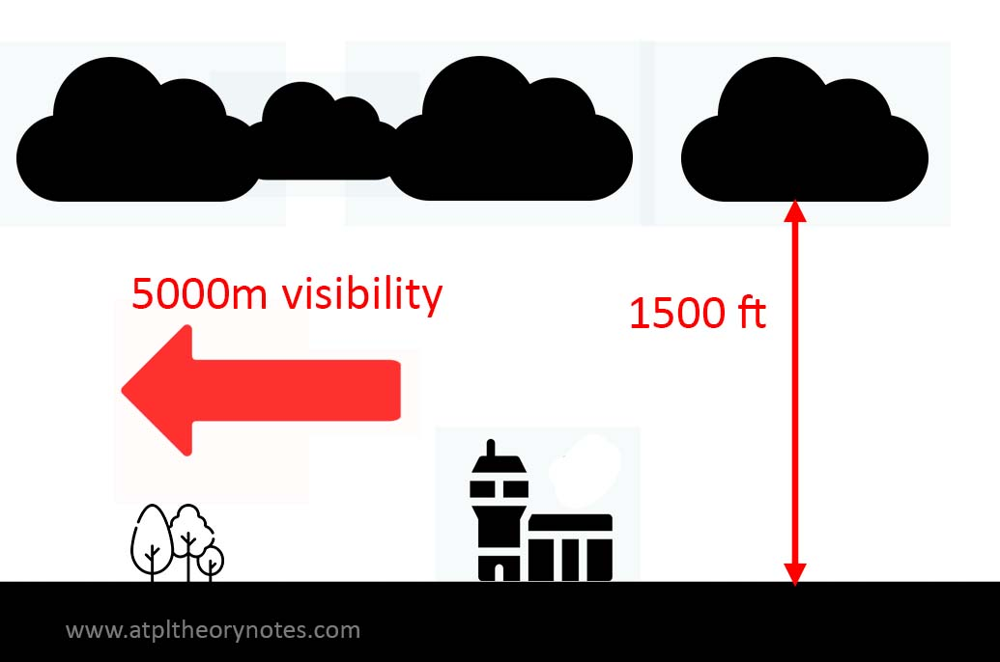
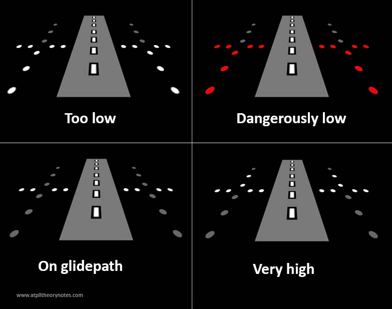

1. ICAO Structure
WHAT IS ICAO?
· International Civil Aviation Organization (ICAO)
- Created in 1944 at the Chicago Convention
- Headquarters located in Montreal
- Develops principles, techniques and regulations for international aviation
ICAO STRUCTURE
· ICAO is formed by 3 main bodies which are the Assembly, the Council and the Secretariat
- ICAO Assembly
- It's the main body. All countries are represented here
- Meets every 3 years
- Votes for 36 States which will compose the ICAO Council
- Makes policy recommendations, reviews the work of ICAO and offers guidance to other ICAO bodies
- ICAO Council
- Composed by 36 member states, which are elected by the Assembly for 3 years
- Subdivided into Committees that suggest modifications to ICAO Annexes
- It may act as arbiter between member states on disputes regarding the interpretation or application of the Chicago Convention and its annexes
- In general, it may take whatever steps are necessary to maintain the safety and regularity of international air transport
- ICAO Secretariat
- Runs administrative tasks
ICAO ANNEXES
· ICAO Annexes contain SARPS (Standard and Recommended Practices)
- Annex 1 - Personnel Licensing
- Annex 2 - Rules of the Air
- Annex 3 - Meteorological Services
- Annex 4 - Aeronautical Charts
- Annex 5 - Units of Measurement
- Annex 6 - Operation of Aircraft
- Annex 7 - Aircraft Nationality and Registration Marks
- Annex 8 - Airworthiness of Aircraft
- Annex 9 - Facilitation
- Annex 10 - Aeronautical Telecommunications
- Annex 11 - Air Traffic Services
- Annex 12 - Search and Rescue
- Annex 13 - Aircraft Accident and Incident Investigation
- Annex 14 - Aerodromes
- Annex 15 - Aeronautical Information Services (AIS)
- Annex 16 - Environmental Protection
- Annex 17 - Security
- Annex 18 - The Safe Transportation of Dangerous Goods by Air
- Annex 19 - Safety management
OTHER ORGANIZATIONS
· International Air Transport Association (IATA)
- It is a trade association for aviation operators
- Its mission is to represent, lead and serve the airline industry
· European Aviation Safety Agency (EASA)
- It's an European Union Agency responsible for producing rules and regulations, and implementing those in Europe.
- It carries out certification, regulation and standardization and also performs investigation and monitoring
- Collects and analyzes data, drafts and advises on safety legislation
2. Rules of the Air
DEFINITIONS
| Acrobatic flight | Manoeuvres intentionally performed by an aircraft involving an abrupt change in its attitude, an abnormal attitude, or an abnormal variation in speed. |
|---|---|
| Airborne collision avoidance system (ACAS) | An aircraft system based on secondary surveillance radar (SSR) transponder signals which operates independently of ground-based equipment to provide advice to the pilot on potential conflicting aircraft that are equipped with SSR transponders. |
| Air traffic | All aircraft in flight or operating on the manoeuvring area of an aerodrome |
| Airway | A control area or portion thereof established in the form of a corridor. |
| Alternate aerodrome | An aerodrome to which an aircraft may proceed when it becomes either impossible or inadvisable to proceed to or to land at the aerodrome of intended landing where the necessary services and facilities are available, where aircraft performance requirements can be met and which is operational at the expected time of use. This may include a take-off, en-route of destination alternate. |
| Ceiling | The height above the ground or water of the base of the lowest layer of cloud below 6 000 metres (20 000 feet) covering more than half the sky. |
| Estimated off-block time | The estimated time at which the aircraft will commence movement associated with departure. |
| Estimated time of arrival | For IFR flights, the time at which it is estimated that the aircraft will arrive over that designated point, defined by reference to navigation aids, from which it is intended that an instrument approach procedure will be commenced, or, if no navigation aid is associated with the aerodrome, the time at which the aircraft will arrive over the aerodrome. For VFR flights, the time at which it is estimated that the aircraft will arrive over the aerodrome. |
| Expected approach time | The time at which ATC expects that an arriving aircraft, following a delay, will leave the holding fix to complete its approach for a landing. |
| Manoeuvring area | That part of an aerodrome to be used for the take-off, landing and taxiing of aircraft, excluding aprons. |
| Movement area | That part of an aerodrome to be used for the take-off, landing and taxiing of aircraft, consisting of the manoeuvring area and the apron(s). |
| Prohibited area | An airspace of defined dimensions, above the land areas or territorial waters of a State, within which the flight of aircraft is prohibited. |
| Repetitive flight plan (RPL) | A flight plan related to a series of frequently recurring, regularly operated individual flights with identical basic features, submitted by an operator for retention and repetitive use by ATS units. |
APPLICABILITY OF THE RULES OF THE AIR
· Territorial application of the rules of the air
- All aircraft must comply with the rules of the Country of Registration, wherever they are.
- If conflicting with local rules, the most restrictive applies.
- On high seas where a Contracting State has taken responsibility, that State has the sovereignty and aircraft must comply with that State's rules.
- On high seas where no Contracting State has taken over, ICAO rules apply.
· Compliance with the rules of the air
- Aircraft must comply with the general rules plus:
- Instrument flying rules if flying IFR
- Visual flying rules if flying VFR
· Responsibility for compliance with the rules of the air
- PIC is responsible for the operation of the aircraft in accordance with the rules of the air. Departure from these rules is allowed only when absolutely necessary in the interests of safety.
- Before beginning a flight, PIC must become familiar with all available information appropriate to the intended operation, including weather reports and forecasts, and fuel requirements.
· The pilot-in-command of an aircraft shall have final authority as to the disposition of the aircraft while in command.
GENERAL RULES
PROTECTION OF PERSONS AND PROPERTY
· Negligent or reckless operation of aircraft
- An aircraft shall not be operated in a negligent or reckless manner so as to endanger life or property of others.
· Minimum heights
- Except when necessary for take-off or landing, or with permission by authority, aircraft shall not be flown over the congested areas of cities, towns or settlements or over an open-air assembly of persons, unless at such a height as will permit, in the event of an emergency arising, a landing to be made without undue hazard to persons or property on the surface.
· Cruising levels
- Cruising levels shall be in terms of:
- Flight levels, for flights above the lowest usable FL, or, where applicable, above the transition altitude.
- Altitudes, for flights below the lowest usable flight level, or, where applicable, at or below the transition altitude.
· Dropping or spraying
- Nothing shall be dropped or sprayed from aircraft except under conditions prescribed by authority or with specific approval.
· Towing
- No aircraft or other object shall be towed by an aircraft, except in accordance with requirements prescribed by the authority or with specific approval.
· Parachute descents
- Parachute descents shall not be made except under conditions prescribed by the appropriate ATS unit.
· Aerobatic flight
- No aircraft shall be flown acrobatically except under conditions prescribed by the authority or with specific approval.
· Formation flights
- Aircraft shall not be flown in formation except by pre-arrangement among the PICs, and, for formation flight in controlled airspace, in accordance with conditions prescribed by the authority, in which case:
- The formation operates as a single aircraft in terms of navigation and position reporting
- Separation between aircraft is responsibility of flight leader and PIC or other aircraft in the formation
- A distance not exceeding 1 km laterally and longitudinally and 30 m (100 ft) vertically from flight leader should be maintained
· Prohibited and restricted areas
- Aircraft shall not be flown in prohibited or restricted areas, except in accordance with authority restrictions or with specific approval.
AVOIDANCE OF COLLISIONS
· PIC of an aircraft always has the responsibility of taking action to avoid collisions. This involves performing collision avoidance manoeuvres, if required.
· Proximity
- Aircraft shall not be operated in such proximity to other aircraft as to create a collision hazard.
RIGHT OF WAY· General
· Aircraft approaching head-on
· Converging aircraft
· Overtaking aircraft
· Landing aircraft
· On the ground
|
LIGHTS TO BE DISPLAYED BY AIRCRAFT
· In flight
- Anti-collision lights shall be displayed at all times in flight.
- Navigation lights shall be displayed at night and they have priority over other lights if they can cause confusion.
· On the ground
- Aircraft operating on the movement area shall display anti-collision and navigation lights.
- Unless stationary and otherwise adequately illuminated, lights to indicate the extremities of the aircraft should be displayed
- If engines are running, there must be a light on to indicate that fact.
· Navigation lights
|
· Anti-collision lights
|
· Flashing lights can be switched off if they affect the satisfactory performance of duties or if they cause dazzling.
SIMULATED INSTRUMENT FLIGHTS
· Simulated IFR is only allowed if:
- Aircraft has fully functional dual controls.
- A qualified pilot is occupying a control seat.
- The safety pilot must have an adequate vision forward and to each side of the aircraft. If this is not possible, a competent observer can be used to cover the safety pilot's blind spots.
OPERATION IN THE VICINITY OF AN AERODROME
· Traffic must
- Observe other traffic to avoid collision.
- Conform with or avoid the airport's traffic pattern.
- Make all turns to the left unless otherwise instructed.
- Take-off and land against the wind unless preferable otherwise.
FLIGHT PLANS
· Must be submitted prior to operating:
- Any flight or portion provided with ATC service.
- Any IFR flight within advisory airspace.
- Any flight that goes into designated areas or routes where a flight plan is required by ATS authority.
- Any flight across international borders
· Flight plans must be submitted at least 60 minutes prior to departure.
- If submitted in flight, the flight plan must be submitted at a time which will ensure receipt by the appropriate ATS unit at least 10 minutes before the aircraft reaches the intended point of entry into a control area.
· Contents of a flight plan
- Aircraft identification
- Flight rules and type of flight
- Number and type of aicraft
- Equipment
- Departure, aerodrome
- EOBT
- Cruising speed
- Cruising level
- Route to be followed
- Destination aerodrome
- Alternate aerodrome
- Fuel endurance
- POBs
- Emergency and survival equipment
- Other information
· Changes to a flight plan
- Changes to flight plans of IFR flights, or controlled VFR flights must be reported as soon as practicable to the appropriate ATS units.
· Closing a flight plan
- Flight plans must be closed as soon as possible after the completion of a flight, either in person, via telephone or data-link.
- If destination aerodrome communication facilities are inadequate, flight plan must be closed via radio prior to landing
- Arrival report must contain:
- Aircraft identification
- Departure and arrival aerodromes
- Time of arrival
TIME
· Coordinated Universal Time (UTC) shall be used and expressed in hours and minutes, and, when required, seconds of the 24-hour day beginning at midnight.
- Wherever time is used in data-link communications, it should be accurate to within 1 second of UTC.
AIR TRAFFIC CONTROL SERVICES
· ATC clearances
- Must be obtained prior to operating a controlled flight
- For ground movement, aircraft shall not taxi on the maneuvering area without clearance.
- Clearances can include: direction of take-off, level to maintain before continuing climb to assigned cruise level, points at which level changes must be made, constraints, etc.
· Adherence to flight plan
- Aircraft must stick to the submitted flight plan unless a request is approved or an emergency arises.
· "Operations normal" message indicates to ATC that the flight is progressing as per plan.
· If aircraft inadvertently deviates from flight plan, it must:
- Regain track as soon as possible
- Report to ATC if TAS varies by +-5%
- Report to ATC if ETA for the next reporting point changes by more than 2 minutes
- (Many of these requirements don't take place when under radar control)
· If weather deteriorates below VMC, VFR flights shall:
- Request amended clearance to continue VMC to destination or alternate.
- Continue to operate in VMC and notify the appropriate ATC unit of the action being taken.
- If within a control zone, request authorization to operate as SVFR.
- Ultimately, request IFR
· Position reports
- Unless exempted, aircraft must, as soon as possible report the time and level of passing each designated compulsory reporting point, and any additional points when requested by ATC.
· Termination of control
- A controlled flight, except when landing at a controlled aerodrome, shall advise appropriate ATS unit as soon as it ceases to be subject to ATC service.
COMMUNICATION
· An aircraft, when under control, must establish a 2 way communication with ATC.
· Communication failure in VMC (it doesn't matter if you are flying VFR or IFR)
- Continue to fly in VMC (Critical!)
- Land at the nearest suitable aerodrome
- Report its arrival by the most expeditious means to the appropiate ATCU
· Communication failure in IMC without radar:
- Maintain last assigned flight level and speed for 20 minutes after the failure of reporting a waypoint
- Then, follow the flight plan
· Communication failure in IMC on radar control:
- Maintain last assigned flight level and speed for 7 minutes after:
- the last assigned level or minimum altitude has been reached
- the time the transponder has been set to 7600
- aircraft's failure to report its position
- (whichever is later)
- Then, follow the flight plan
UNLAWFUL INTERFERENCE
· Notify the ATSU of:
- The fact that you are being interfered unlawfully
- Any significant circumstances associated with the interference
- Any deviation from the current flight plan necessitated by the circumstances
INTERCEPTION
· Principles of aircraft interception
- Interception is the last resource only
- Civil aircraft will not be intercepted for training purposes
- Interception is limited to determining the identity of the aircraft, unless its necessary to guide the aircraft somewhere
- Navigational guidance may be provided
- The aerodrome designated for landing must be suitable for the safe landing of the aircraft
· Action by intercepted aircraft
- Follow interceptor's instructions
- Notify ATC
- Attempt to communicate on 121.5 mHz and 243.0 mHz (international emergency frequencies)
- Select MODE A 7700
- Note: Selecting mode A 7700 doesn't mean that you have to switch your transponder from mode C to mode A. You can leave the transponder on mode C. It just means that the "A" part of the transponder (which holds the code) must be set accordingly.
· Signals in the event of an interception
- Signals made by interceptor
- Rocking wings and flashing navigation lights irregularly followed by a slow turn: YOU HAVE BEEN INTERCEPTED, FOLLOW ME
- Abrupt break from aircraft: YOU MAY PROCEED
- Lowering landing gear, showing steady landing lights, overflying runway: LAND AT THIS AERODROME
- Gear up, rocking wings and flashing nav lights: UNDERSTOOD, FOLLOW ME
- Signals made by intercepted aircraft
- Rocking the aircraft and flashing lights irregularly: UNDERSTOOD, WILCO
- Lowering the landing gear, steady landing lights, overflying runway and, if considered safe, PROCEED TO LAND
- Regular switching on and off all available lights: UNABLE, CANNOT COMPLY
- Irregular flashing of all available lights: IN DISTRESS
· For radio contact on 121.5 mHz, each phrase should be transmitted twice
- Words that may be said by INTERCEPTING aircraft: Callsign, follow, descent, you land, proceed
- Words that may be used by INTERCEPTED aircraft: Callsign, wilco, cannot, repeat, am lost, mayday, hijack, land, descent
· Actions to be taken by ATS unit:
- Attempt to establish communication on 121.5 mHz
- Inform the pilot of the interception
- Establish contact with the intercept control unit
- Relay messages between intercepting and intercepted aircraft
- Ensure the safety of the intercepted aircraft
- Inform ATS units serving adjacent FIRs
VISUAL FLIGHT RULES (VFR)
· Meteorology:
|  |
· Night VFR
- During night, VFR shall be operated in accordance with the authority conditions
· Altitude and speed limitations
- VFR flights shall not be operated above FL200, or at transonic or supersonic speeds unless authorized
- Authorization for VFR flights above FL290 is not possible if RVSM airspace applies
- Minimum aircraft height
- 1000 ft over the highest obstacle within a 600m radius over congested areas of cities, towns or settlements or over an open-air assembly of persons.
- 500 ft elsewhere
- When cruising above 3000 ft, cruise levels must be used according to the semicircular rule
· Visual Meteorological Conditions (VMC)
- Above 10.000 ft:
- Flight visibility: 8 km
- Distance to clouds: 1500m horizontally, 1000 ft vertically
- Between 3.000 ft and 10.000 ft:
- Flight visibility: 5 km
- Distance to clouds: 1500m horizontally, 1000 ft vertically
- At and below 3000 ft, AIRSPACE CLASSES "A" TO "E"
- Flight visibility: 5 km
- Distance to clouds: 1500m horizontally, 1000 ft vertically
- At and below 3000 ft, AIRSPACE CLASSES "F" AND "G"
- Flight visibility: 5 km
- Clear of cloud and surface in sight

INSTRUMENT FLIGHT RULES (IFR)
· Aircraft must be equipped with suitable instruments appropriate to the route to be flown.
· Minimum levels:
- Aircraft must be at least 1000 ft above the highest obstacle located within 8 km of the aircraft
- EXCEPTION: Over high terrain or mountainous areas, aircraft must be at least 2000 ft above the highest obstacle located within 8 km of the aircraft
· Change from IFR to VFR
- Notify the ATC of the cancellation of the IFR flight
- Communicate any changes to be made to the flight plan
- IFR flight must not be cancelled unless the flight is intended to continue for a reasonable period in VFR
· Rules within controlled airspace
- Fly at a specified cruising level unless climbing or descending
- The track rule (semicircular rule) may not apply if indicated by the AIP
- Standard separation is non-RVSM.
· Rules outside controlled airspace
- Fly at a cruising level appropriate to the track, except when otherwise indicated by the AIP
· Communication
- IFR flights flying into or in specific routes must establish a 2 way communication
- IFR flights must report their position as specified in the rules of the air
· Altitudes

SIGNALS FOR AERODROME TRAFFIC
· Lights and pyrotechnics:
| LIGHTS | MEANING TO AIRCRAFT IN THE AIR | MEANING TO AIRCRAFT ON THE GROUND | |
| Steady green | Cleared to land | Cleared for take/off | |
| Flashing green | Return for landing | Cleared for taxi | |
| Steady red | Give way to other aircraft and continue circling | Stop | |
| Flashing red | Aerodrome unsafe, do not land | Taxi clear of landing area in use | |
| Flashing white | Land at this aerodrome and proceed to apron | Return to starting point | |
| Red pyrotechnic | Notwithstanding any previous instructions, do not land. | ||
· Acknowledgement
- Aircraft in flight
- Rock wings during the day
- Flash landing lights (or nav) twice at night
- Aircraft on the ground
- Move ailerons during the day
- Flash landing lights (or nav) twice at night
· If red and green projectiles are discharged, it means that an aircraft is flying in or about to enter a dangerous, restricted or prohibited area.
VISUAL GROUND SIGNALS
| Signal | Description | Signal | Description |
|---|---|---|---|
| Landings are prohibited | Special precautions must be observed when landing | ||
| Aircraft are required to land, take-off and taxi on runways and taxiways only |  | Taxi and other maneuvers are not restricted to taxiways | |
| Area unfit for movement of aircraft | Direction for landing and take-off | ||
| Aerodrome is being used by gliders | Direction of the traffic pattern | ||
| Number of runway for take-off (or the direction) | Location of air traffic services reporting office |
· Marshaling signals from the pilot:
- Clenching fist: brakes engaged
- Extending fingers: brakes released
- Crossing hands in front of face, place palms facing outwards, then move arms outwards: remove chocks
- Raising the fingers on one hand indicating n of engine: Ready to start engines
- Forming a T (right hand below, left hand on top): Connect ground power
- "Disarming" a T: Remove ground power
· Marshaling signals from signalman:

Image source: www.aircraftsystemstech.com
· Rescue and firefighting signals:
- Recommend evacuation: Arm held against body, execute beckoning arm motion backwards
- Recommended stop: arms in front of head, crossed at wrists
- Emergency contained: arms moved inwards below waist, then back outwards
MORE RULES
· Clearances must be read back entirely as per regulation
· VFR in E airspace: 2 way communication is NOT required
· Repetitive flight plans:
- Can be submitted for flights concurring either the same day of the week for 10 occasions or 10 consecutive days
· If IFR flying in IMC conditions and no radio: transmit blind saying everything twice
· Anti-collision lights must be on, at least, sunset to sunrise anytime in flight.
3. Aerodromes
DEFINITIONS
| Aerodrome | A defined area on land or water (including any buildings, installations and equipment) intended to be used either wholly or in part for the arrival, departure and surface movement of aircraft. |
|---|---|
| Aerodrome elevation | The elevation of the highest point of the landing area. |
| Aerodrome Reference Point (ARP) | The designated geographical location of an aerodrome. |
| Apron | A defined area, on a land aerodrome, intended to accommodate aircraft for purposes of loading or unloading passengers, mail or cargo, fuelling, parking or maintenance. |
| Barrette | Three or more aeronautical ground lights closely spaced in a transverse line so that from a distance they appear as a short bar of light. |
| Frangible object | An object of low mass designed to break, distort or yield on impact so as to present the minimum hazard to aircraft. |
| Instrument runway | One of the following types of runways intended for the operation of aircraft using instrument approach procedures (Whether they are non-precision or precision approaches). |
| Maneuvering area | That part of an aerodrome to be used for the take-off, landing and taxiing of aircraft, excluding aprons. |
| Movement area | That part of an aerodrome to be used for the take-off, landing and taxiing of aircraft, consisting of the manoeuvring area and the apron(s). |
| Non-instrument runway | A runway intended for the operation of aircraft using visual approach procedures. |
| Obstacle-free zone (OFZ) | The airspace above the inner approach surface, inner transitional surfaces, and balked landing surface and that portion of the strip bounded by these surfaces, which is not penetrated by any fixed obstacle other than a low-mass and frangibly mounted one required for air navigation purposes. |
GENERAL
· Aerodrome Reference Code
- A quick way for operators and pilots to determine if an aerodrome is suitable
- Code consists of 2 characters:
- First character is a NUMBER (1-4) and covers the airplane reference field length
- Second character is a LETER (A-F) and covers airplane wing span and outer main gear wheel span
AERODROME DATA
· Aerodrome Reference Point (ARP)
- Located near the initial planned geometric centre of the aerodrome. It's not usually moved afterwards.
- Uses WGS-84 model
· Strength of pavements
- For aircraft of more than 5700 kg MTOM, the strength of the pavement is made available using the Aircraft Classification Number - Pavement Classification Number:
- If PCN is equal to or greater than the ACN, airport is suitable for that type of aircraft.
- Different PCNs may be provided if pavement strength is subject to seasonal variation.
- For aircraft of less than 5700 kg MTOM, the strength of the pavement is given in terms of total mass / tyre pressure.
· Declared distances
- TORA, TODA, ASDA and LDA must be calculated to the nearest metre or foot for each runway intended for use by international commercial air transport.
· Condition of the movement area and related facilities
- Up to date information about the condition of the movement area and facilities of the aerodrome must be provided by AIS authorities.
- Changes must be reported without delay, specially if they involve construction or maintenance work, surface contamination, broken surfaces, or other temporary hazards.
- Water on a runway
- If water is present, an assessment should be made including the following terms
- DAMP. Surface shows a change of color due to moisture, but surface is not reflective and standing water is not visible.
- WET. Surface is soaked but without standing water.
- WATER PATCHES. Significant patches of standing water are visible.
- FLOODED. Extensive standing water is visible.
- If water is present, an assessment should be made including the following terms
- Authority must report any portion of the runway that to become "slippery when wet"
- Snow, slush or ice on a runway
- Frozen water on a runway must be assessed when there is snow, slush, ice or frost
· Reporting braking action
- 0.25 and below - Poor - Code 1
- 0.26 - 0.29 - Medium to poor - Code 2
- 0.30 - 0.35 - Medium - Code 3
- 0.36 - 0.39 - Medium to good - Code 4
- 0.40 and above - Good - Code 5
· Rescue and firefighting
- Information concerning the level of protection provided at an aerodrome for aircraft rescue and fire fighting purposes shall be made available.
- Significant changes in the level of protection available should be notified to ATS units and Aeronautical Information units, in order to notify operating aircraft.
PHYSICAL CHARACTERISTICS
· Runways
- ICAO suggests a minimum runway width depending on the Aerodrome Classification Number:
| Code number | Runway width code letter (m) | |||||
|---|---|---|---|---|---|---|
| A | B | C | D | E | F | |
| 1 | 18 | 18 | 23 | -- | -- | -- |
| 2 | 23 | 23 | 30 | -- | -- | -- |
| 3 | 30 | 30 | 30 | 45 | -- | -- |
| 4 | -- | -- | 45 | 45 | 45 | 60 |
· Runway turn pads
- Where the end of a runway is not served by a taxiway or a taxiway turnaround and where the code letter is D, E or F, a runway turn pad shall be provided to facilitate a 180-degree turn of aeroplanes
· Runway strips
- General
- A runway and any associated stopways shall be included in a strip
- Defined as an area including the runway and stopway intended to reduce the risk of damage to an aircraft running off a runway and to protect aircraft flying over it during take off or landing operations.
- Length
- A strip shall extend before the threshold and beyond the end of the runway or stopway for a distance of at least:
- 60 m where the code number is 2, 3 or 4
- 60 m where the code number is 1 and the runway is an instrument one
- 30 m where the code number is 1 and the runway is non-instrument one
- A strip shall extend before the threshold and beyond the end of the runway or stopway for a distance of at least:
- Width
- A strip including a precision approach runway shall, wherever practicable, extend laterally, on each side of the centreline, to a distance of at least
- 150 m where the code number is 3 or 4
- 75 m where the code number is 1 or 2
- Objects
- No fixed object, other than visual aids required for air navigation purposes and satisfying the relevant frangibility requirements shall be permitted on a runway strip
- A strip including a precision approach runway shall, wherever practicable, extend laterally, on each side of the centreline, to a distance of at least
· Runway End Safety Areas (RESAs)
- Defined as an area intended to reduce the risk of damage to an airplane overshooting or undershooting the runway.
- RESA shall extend from the end of a runway strip to a distance of at least 90 m.
- The width of a RESA shall be at least twice of that of the associated runway.
· Clearways
- The origin of a clearway should be at the end of the take-off run available
- The length of a clearway should not exceed half the length of the take-off run available
- A clearway should extend laterally to a distance of at least 75 m on each side of the extended centre line of the runway
· Stopways
- A stopway shall have the same width as the runway with which it is associated
- A stopway should be prepared or constructed so as to be capable, in the event of an abandoned take-off, of supporting the aeroplane which the stopway is intended to serve without inducing structural damage to the aeroplane
· Radio Altimeter Operating Area:
- Should be established in the pre-threshold area of a precision approach runway
- Must extend 300m before the threshold and to a minimum distance of 60m each side of the centreline (can be reduced to 30 under some circumstances)
- Changes in slope should be minimized here. Maximum allowable is 2% every 30 metres.
· Taxiways
- Taxiways should be provided to permit the safe and expeditious surface movement of aircraft.
- Changes in direction of taxiways should be as few and small as possible. The radii of the curves should be compatible with the manoeuvring capability and normal taxiing speeds of the aeroplanes for which the taxiway is intended.
- Where a turn exists, the inner side of the turns must have extra pavement to prevent the inner wheel from going off even if the cockpit remains over the taxiway centreline at all times.
- The strength of a taxiway should be at least equal to that of the runway it serves.
- Rapid exit taxiways should include a straight section to allow for slow-down.
- The intersection angle of a rapid exit taxiway should be between 25 - 45º (it should preferably be 30º)
· Holding bays, runway-holding positions, intermediate holding positions and road-holding positions
- Holding bay(s) should be provided when the traffic density is medium or heavy.
- Intermediate holding positions should be established where it is desirable to define a specific holding point.
- A runway holding position shall be established either at a taxiway or at an intersection of a runway with another runway.
- The location of a runway-holding position shall be such that a holding aircraft or vehicle will not infringe the obstacle free zone, approach surface, take-off climb surface or ILS/MLS critical/sensitive area or interfere with the operation of radio navigation aids.
- Minimum distance from the runway centreline to a holding bay or holding position:
· Aprons
- Aprons should be provided where necessary to permit the on- and off-loading of passengers, cargo or mail as well as the servicing of aircraft without interfering with the aerodrome traffic.
- Each part of an apron should be capable of withstanding the traffic of the aircraft it is intended to serve.
· Isolated aircraft parking position
- An isolated aircraft parking position shall be designated or the aerodrome control tower shall be advised of an area or areas suitable for the parking of an aircraft which is known or believed to be the subject of unlawful interference, or which for other reasons needs isolation from normal aerodrome activities.
· De-icing/anti-icing facilities
- Aeroplane de-icing/anti-icing facilities should be provided at an aerodrome where icing conditions are expected to occur.
VISUAL AIDS FOR NAVIGATION
· Indicators and signalling devices
- Wind direction indicators
- At least one wind direction must be present in the aerodrome.
- It must be visible from aircraft in flight or on the movement area and in such a way as to be free from the effects of air disturbances caused by nearby objects.
- Landing direction indicator
- Where provided, a landing direction indicator, in the form of a "T", shall be located in a conspicuous place on the aerodrome.
- Signalling lamp
- A signalling lamp shall be provided at a controlled aerodrome in the aerodrome control tower.
- A signalling lamp should be capable of producing red, green and white signals, and of:
- being aimed manually at any target as required;
- giving a signal in any one color followed by a signal in either of the two other colors; and
- transmitting a message in any one of the three colors by Morse Code
- Signal panels and signal area
- The signal area should be located so as to be visible for all angles of azimuth above an angle of 10° above the horizontal when viewed from a height of 300 m.
- The signal area shall be an even horizontal surface of at least 9 m square
· Markings
- Intersections
- At an intersection of two (or more) runways, the markings of the more important runway shall be displayed and the markings of the less important runway shall be interrupted.
- At an intersection of a runway and taxiway the markings of the runway shall be displayed and the markings of the taxiway interrupted.
- Colors and cospicuity
- Runway markings shall be white.
- Taxiway markings, runway turn pad markings and aircraft stand markings shall be yellow.
- Apron safety lines shall be of a conspicuous colour which shall contrast with that used for aircraft stand markings.
- Runway designation marking
- A runway designation marking shall be provided at the thresholds of a paved runway.
- A runway designation marking shall consist of a two-digit number and on parallel runways shall be supplemented with a letter.
- The runway designation should be made according to the magnetic track of the runway.
- Runway centreline marking
- A runway centre line marking shall be provided on a paved runway.
- A runway centre line marking shall consist of a line of uniformly spaced stripes and gaps.
- The length of a stripe plus a gap shall be not less than 50 m or more than 75 m.
- The length of each stripe shall be at least equal to the length of the gap or 30 m, whichever is greater
- Threshold marking
- A threshold marking shall be provided at the threshold of a paved instrument runway, and of a paved noninstrument runway where the code number is 3 or 4 and the runway is intended for use by international commercial air transport.
- The stripes of the threshold marking shall commence 6 m from the threshold.
- A runway threshold marking shall consist of a pattern of longitudinal stripes of uniform dimensions disposed symmetrically about the centre line of a runway.
- The number of stripes shall be in accordance with tue runway width:
- 18m - 4 stripes
- 23m - 6 stripes
- 30m - 8 stripes
- 45m - 12 stripes
- 60m - 16 stripes
- Where a runway threshold is permanently displaced, arrows shall be provided on the portion of the runway before the displaced threshold.
- When a runway threshold is temporarily displaced from the normal position, all markings prior to the displaced threshold shall be obscured except the runway centre line marking, which shall be converted to arrows.
- Aiming point marking
- An aiming point marking shall be provided at each approach end of a paved instrument runway where the code number is 2, 3 or 4.
- An aiming point marking shall consist of two conspicuous stripes.
- Touchdown zone marking
- A touchdown zone marking shall be provided in the touchdown zone of a paved precision approach runway where the code number is 2, 3 or 4.
- Touchdown zone marking shall consist of pairs of rectangular markings symmetrically disposed about the runway centre line with the number of such pairs related to the landing distance available.
- The LDA determines the amount of pairs of markings:
- < 900m LDA - 1 pair of markings
- 900 m up to but not including 1200 m - 2 pairs of markings
- 1200 m up to but not including 1500 m - 3 pairs of markings
- 1500 m up to but not including 2400 m - 4 pairs of markings
- 2400 m or more - 6 pairs of markings
- Runway side stripe marking
- A runway side stripe marking shall be provided between the thresholds of a paved runway where there is a lack of contrast between the runway edges and the shoulders or the surrounding terrain.
- Taxiway centre line marking
- Taxiway centre line marking shall be provided on a paved taxiway, de-icing/anti-icing facility and apron where the code number is 3 or 4 in such a way as to provide continuous guidance between the runway centre line and aircraft stands.
- Runway turn pad marking
- Where a runway turn pad is provided, a runway turn pad marking shall be provided for continuous guidance to enable an aeroplane to complete a 180-degree turn and align with the runway centre line.
|
|
· Signs
- Signs shall be provided to convey a mandatory instruction, information on a specific location or destination on a movement area.
- Signs shall be frangible. Those located near a runway or taxiway shall be sufficiently low to preserve clearance for propellers and the engine pods of jet aircraft
- Signs shall be rectangular, with the longer side horizontal.
- The only signs on the movement area utilizing red shall be mandatory instruction signs.
- Mandatory, direction and location signs exist, with color codes similar to those of the markings.
- Mandatory instruction sign shall be provided to identify a location beyond which an aircraft taxiing or vehicle shall not proceed unless authorized by the aerodrome control tower.
- Mandatory instruction signs shall include runway designation signs, category I, II or III holding position signs, runway-holding position signs, road-holding position signs and NO ENTRY sign.
- A pattern “A” runway-holding position marking shall be supplemented at a taxiway/runway intersection or a runway/runway intersection with a runway designation sign.
- A pattern “B” runway-holding position marking shall be supplemented with a category I, II or III holding position sign.
- A NO ENTRY sign shall be located at the beginning of the area to which entrance is prohibited on each side of the taxiway as viewed by the pilot.
- A runway designation sign at a taxiway/runway intersection or a runway/runway intersection shall be located on each side of the runway-holding position marking facing the direction of approach to the runway.
· Markers
- Markers shall be frangible. Those located near a runway or taxiway shall be sufficiently low to preserve clearance for propellers and for the engine pods of jet aircraft.
- Unpaved runway edge markers should be provided when the extent of an unpaved runway is not clearly indicated by the appearance of its surface compared with that of the surrounding ground.
- Stopway edge markers should be provided when the extent of a stopway is not clearly indicated by its appearance compared with that of the surrounding ground.
- Boundary markers shall be provided at an aerodrome where the landing area has no runway.
AERODROME LIGHTING
· General
- Non-aeronautical ground lights near aerodromes that may endanger the safe operation of aircraft or may cause confusion must be removed.
- The last 300m of elevated approach lights and their structure should be frangible.
- Elevated runway, stopway and taxiway lights shall be frangible.
- Light fixtures inset in the surface of runways, stopways, taxiways and aprons shall be designed to withstand the being run over by the wheels or an aircraft without causing nor receiving damage.
· Aeronautical beacons
- Where operationally necessary, an aerodrome beacon or an identification beacon shall be provided at each aerodrome intended for use at night.
- Aerodrome beacons
- An aerodrome beacon shall be provided at an aerodrome intended for use at night if one or more of the following conditions exist:
- Aircraft navigate predominantly by visual means
- Reduced visibilities are frequent
- It is difficult to locate the aerodrome from the air due to surrounding terrain or lighting
- The aerodrome beacon shall show either coloured flashes alternating with white flashes, or white flashes only. Where colored, they shall be:
- Green for land aerodromes
- Yellow for water aerodromes
- Red for military aerodromes
- An aerodrome beacon shall be provided at an aerodrome intended for use at night if one or more of the following conditions exist:
- Identification beacons
- An identification beacon shall be provided at an aerodrome which is intended for use at night and cannot be easily identified from the air by other means.
- An identification beacon shall show flashing-green at a land aerodrome and flashing-yellow at a water aerodrome.
- The identification characters shall be transmitted in the International Morse Code.
APPROACH LIGHTING
· Simple approach lighting system
|
· Precision approach category I lighting system
|
· Precision approach category II and III lighting system
|
· Calvert Lighting System
|
· Visual Approach Slope Indicators (VASIs)
|
· T-VASIS
|  |
· AT-VASIS (Abbreviated T-VASIs)
|
· PAPIs (Precision Approach Path Indicators)
|
· Circling guidance lights
- Should be provided when existing approach and runway lighting systems don't permit identification of the runway or approach area to circling aircraft.
- Must enable pilots to:
- join the downwind leg or align and adjust the aircraft’s track to the runway at a required distance from it, and
- keep in sight the runway threshold and/or other features which will make it possible to judge the turn on to base leg and final approach, taking into account the guidance provided by other visual aids
- Circling guidance lights should be white fixed or flashing lights.
· Runway lead-in lighting system.
- Used where it is desirable to provide visual guidance along a specific approach path.
- May be curved, straight or a combination thereof.
· Runway threshold identification lights
- Runway threshold identification lights should be installed:
- at the threshold of a non-precision approach runway
- where a runway threshold is permanently displaced from the runway extremity of temporarily displaced from the normal position
- Location
- Runway threshold identification lights shall be located symmetrically about the runway centre line, in line with the threshold and approximately 10 m outside each line of runway edge lights.
- Characteristics
- Runway threshold identification lights should be flashing white lights with a flash frequency between 60 and 120 per minute.
- The lights shall only be visible in the direction of the approach to the runway.
· Runway centreline lights
- Required on CAT II/III runways or when runways are usable below 400m RVR
- Fixed lights showing variable white from the threshold to the point 900m before runway end.
- Between the last 900 and 300m, lights must be fixed but alternating between colors red and white.
- The last 300 metres, lights must show fixed red. (3 leters, 300 metres)
· Runway edge lights
- Runway edge lights are fixed lights showing variable white.
- They should be omni-directional, in order to provide guidance for aircraft taking off and landing at both directions.
- Pre-threshold lighting shall show red in the direction of the approaching aircraft
- Caution zone: last 600m of the runway, yellow edge lights. (rule -> yellow has 6 leters, therefore, 600m)
· Runway threshold and wing bar lights
- Fixed unidirectional lights showing green in the direction of the approach to the runway
· Runway end lights
- Fixed unidirectional lights showing red in the direction of the runway.
· Touchdown zone lighting
- Provided in the touchdown zone of CAT II/III runways.
- They should extend 900 metres from the threshold.
- The pattern shall be formed by pairs of barrettes, consisting on fixed unidirectional lights showing variable white.
· Rapid exit taxiway indicator lights
- Pilots must be provided lit distance to go indications to rapid exit taxiways
· Stopway lights
- Provided for a stopway intended for use at night.
- Fixed unidirectional lights showing red in the direction of the runway.
· Taxiways
- Taxiway centreline lights must be green
- Taxiway edge lights are blue
- Taxiway lights alternate yellow and green lighting whenever you are inside the ILS/MLS sensitive area.
· Stop bars
- Stop bars shall be located across the taxiway at the point where it is desired that traffic stop.
- At runway holding positions, lights shall be unidirectional and shall show red in the direction of approach to the runway.
· Intermediate holding position lights
- Three fixed unidirectional lights showing yellow in the direction of approach to the intermediate holding position.
VISUAL AIDS FOR DENOTING OBSTACLES
· Objects to be marked or lighted
- A fixed obstacle that extends above a take-off climb surface within 3 000 m of the inner edge of the take-off climb surface should be marked and, if the runway is used at night, lighted.
- Vehicles and other mobile objects, excluding aircraft, on the movement area of an aerodrome are obstacles and shall be marked and, if the vehicles and aerodrome are used at night or in conditions of low visibility, lighted, except that aircraft servicing equipment and vehicles used only on aprons may be exempt.
- Elevated aeronautical ground lights within the movement area shall be marked so as to be conspicuous by day.
· Marking of objects
- Requirements
- Fixed objects to be marked shall, whenever practicable, be colored, but if this is not practicable, markers or flags shall be displayed on or above them, except that objects that are sufficiently conspicuous by their shape, size or color need not be otherwise marked.
- All mobile objects to be marked shall be colored or display flags.
- Use of colors
- An object should be colored in a single conspicuous color if its projection on any vertical plane has both dimensions less than 1.5 m.
- Orange or red should be used, except where such colors merge with the background.
- When mobile objects are marked by color, a single conspicuous color, preferably red or yellowish green for emergency vehicles and yellow for service vehicles should be used.
- Use of markers
- Markers displayed on or adjacent to objects shall be located in conspicuous positions so as to retain the general definition of the object.
- The shape of markers shall be distinctive to the extent necessary to ensure that they are not mistaken for markers employed to convey other information, and they shall be such that the hazard presented by the object they mark is not increased.
- A marker displayed on an overhead wire, cable, etc., should be spherical and have a diameter of not less than 60 cm.
- Use of flags
- Flags used to mark objects shall be displayed around, on top of, or around the highest edge of, the object.
- When flags are used to mark extensive objects or groups of closely spaced objects, they shall be displayed at least every 15 m.
· Lightning of objects
- The presence of objects which must be lighted bt medium- or high-intensity obstacle lights, or a combination of such lights
- Low Intensity Lights
- Fixed-red lights on on fixed objects
- Flashing-blue lights on vehicles associated with emergency or security
- Flashing-yellow lights on other vehicles
- Medium Intensity Lights
- Depending on the obstacle, they can be flashing-white, flashing-red or fixed-red.
- When located on an object, all lights should flash simultaneously.
- High Intensity Lights
- High intensity lights shall be flashing-white lights.
- When located on an object, all lights should flash simultaneously.
VISUAL AIDS FOR DENOTING RESTRICTED USE AREAS
· Closed runways and taxiways, or parts thereof
- A closed marking shall be displayed on a runway or taxiway, or portion thereof, which is permanently closed to the use of all aircraft.
- Location
- On a runway a closed marking shall be placed at each end of the runway, or portion thereof, declared closed, and additional markings shall be so placed that the maximum interval between markings does not exceed 300 m
- On a taxiway a closed marking shall be placed at least at each end of the taxiway or portion thereof closed.
- Characteristics
- Closed runways must show several white "X" painted on the surface.
- Closed taxiways must show several yellow "X" painted on the surface.
· Non-load-bearing surfaces
- Shoulders for taxiways, runway turn pads, holding bays and aprons and other non-load bearing surfaces which cannot readily be distinguished from load-bearing surfaces and which, if used by aircraft, might result in damage to the aircraft shall have the boundary between such areas and the load-bearing surface marked by a taxi side stripe marking.
· Pre-threshold area
- When the surface before a threshold is paved and exceeds 60 m in length and is not suitable for normal use by aircraft, the entire length before the threshold should be marked with a chevron marking.
- A chevron marking should be of conspicuous colour and contrast with the colour used for the runway markings; it should preferably be yellow.
· Unserviceable areas
- Unserviceability markers shall be displayed wherever any portion of a taxiway, apron or holding bay is unfit for the movement of aircraft but it is still possible for aircraft to bypass the area safely.
- Unserviceability markers shall consist of conspicuous upstanding devices such as flags, cones or marker boards.
ELECTRICAL SYSTEMS
· Electrical power supply systems for air navigation facilities
- Adequate primary power supply shall be available at aerodromes for the safe functioning of air navigation facilities.
- The design and provision of electrical power systems for aerodrome visual and radio navigation aids shall be such that an equipment failure will not leave the pilot with inadequate visual and non-visual guidance or misleading information.
· Visual aids
- For a precision approach runway, and runways intended for use when taking-off with an RVR below 800 m, a secondary power supply for the appropriate category of precision approach runway shall be provided.
· Monitoring
- Where lighting systems are used for aircraft control purposes, such systems shall be monitored automatically so as to provide an indication of any fault which may affect the control functions. This information shall be automatically relayed to the air traffic service unit.
AERODROME OPERATIONAL SERVICES, EQUIPMENT AND INSTALLATIONS
· Aerodrome emergency planning
- An aerodrome emergency plan shall be established at an aerodrome, commensurate with the aircraft operations and other activities conducted at the aerodrome.
- The objective of the planning is to reduce the adverse consequences of an emergency
· Rescue and fire fighting
- Rescue and fire fighting equipment and services shall be provided at an aerodrome.
- Where an aerodrome is located close to water swampy areas, or difficult terrain, and where a significant portion of approach or departure operations takes place over these areas, specialist rescue services and fire fighting equipment appropriate to the hazard and risk shall be available.
· Response time
- Response times shouldn't exceed 2 minutes to any runway and 3 minutes to any part of the apron.
· The most important factor affecting rescue success is the training received.
4. Aircraft Nationality and Registration Marks
DEFINITIONS
| Aeroplane | A power-driven heavier-than-air aircraft, deriving its lift in flight chiefly from aerodynamic reactions on surfaces which remain fixed under given conditions of flight. |
|---|---|
| Aircraft | Any machine that can derive support in the atmosphere from the reactions of the air other than the reactions of the air against the earth’s surface |
| Common mark | A mark assigned by the International Civil Aviation Organization to the common mark registering authority registering aircraft of an international operating agency on other than a national basis. |
| Common mark registering authority | The authority maintaining the non-national register or, where appropriate, the part thereof, in which aircraft of an international operating agency are registered. |
| Heavier than air aircraft | Any aircraft deriving its lift in flight chiefly from aerodynamic forces. |
| State of Registry | The State on whose register the aircraft is entered. |
NATIONALITY, COMMON AND REGISTRATION MARKS TO BE USED
· General
- The nationality or common mark and registration mark shall consist of a group of characters.
- The nationality or common mark shall precede the registration mark.
- When the first character of the registration mark is a letter, it shall be preceded by a hyphen.
· Nationality mark
- Used by most aircraft
- Assigned to the State of Registry by the International Telecommunication Union
· Common mark
- In some (very strange) cases, a common mark is assigned by ICAO to a common mark registering authority.
- A common mark replaces the nationality mark.
· Registration mark
- The following combinations shall not be used:
- Combinations that can be confused with 5 letter combinations used in the International Code of Signals
- The 3 letter combinations of the Q-Code
- Other similar urgent signals (XXX, PAN, TTT)
- Note that combinations including radio aids are allowed! This is a typical question.
- Example of combinations allowed: (EI-VOR, EC-ILS)
· Each Contracting State or Common Mark Registering Authority will maintain a current register showing, for each aircraft registered, the information recorded in the Certificate of Registration.
· Location of nationality, common marks and registration marks
- A mark must be shown on the left half of the lower surface of the wing. Must be of at least 50cm
- Another mark must be shown each side of the fuselage or each side of the tail surfaces. Must be of at least 30cm.
- In special cases, marks must be shown wherever so the aircraft can be easily identified.
5. Airworthiness of Aircraft
DEFINITIONS
| Airworthy | The status of an aircraft, engine, propeller or part when it conforms to its approved design and is in a condition for safe operation. |
|---|---|
| Continuing airworthiness | The set of processes by which an aircraft, engine, propeller or part complies with the applicable airworthiness requirements and remains in a condition for safe operation throughout its operating life. |
| Design landing (take-off) mass | The maximum mass of the aircraft at which, for structural design purposes, it is assumed that it will be planned to land (to be at the start of the take-off run). |
| Type design | The set of data and information necessary to define an aircraft, engine or propeller type for the purpose of airworthiness determination. |
PROCEDURES FOR CERTIFICATION AND CONTINUING AIRWORTHINESS
· Applicability
- Standards of Airworthiness are applicable to aeroplanes with MCTOM greater than 5700 kg
· Issuance of Type Certificate
- State of Design shall issue a Type Certificate to signify its approval of the design of a given aircraft type.
· State responsibilities
- State of Registry is responsible for issuing certificate of Airworthiness
- State of Design shall ensure that a programme exists to maintain continuing airworthiness.
· Certificate of Airworthiness
- Issued by the State of Registration
- Required for any flight operation
MAINTAINING AIRWORTHINESS
· Determination of continuing airworthiness
- The State of Registry will adopt requirements to ensure the continued airworthiness of an aircraft during its service life, ensuring that the aircraft complies with the airworthiness requirements and is maintained in an airworthy condition.
- Each aircraft must be provided with a flight manual, placards or documents stating the limitations within which the aircraft is considered airworthy, as well as additional instructions and information necessary for the safe operation of aircraft.
- Whenever a Contracting State receives a new type of aircraft, it will get in contact with the State of Design in order to receive applicable information necessary for that aircraft type
· Temporary loss of airworthiness
- Failure to maintain an aircraft in an airworthy condition will make the aircraft ineligible for operation until the aircraft is restored to an airworthy condition.
· Damage to aircraft
- If any aircraft has sustained damage, the State of Registry will judge if the aircraft is no longer airworthy.
- If the damage is sustained while the aircraft is on another Contracting State, that State can prevent the aircraft from flying on the condition that they will advise the State of Registry immediately.
- State of Registry may specify particular limiting conditions for an aircraft to be operated without any commercial operation in order to be restored to an airworthy condition.
· Aircraft above 5700 kg MTOM must have a system where information on faults, malfunctions are defects are transmitted to the organization responsible for the aircraft design to keep proper tracking.
6. Air Traffic Services
GENERAL
· Objectives of the Air Traffic Services
- a) Prevent collisions between aircraft
- b) Prevent collisions between aircraft on the maneuvering area and obstructions on that area
- c) Expedite and maintain an orderly flow of traffic
- d) Provide advice and information useful for the safe conduct of flights
- e) Notify appropriate organizations regarding aircraft in need of SAR aid, and assist those if needed
· Divisions of the Air Traffic Services
- Air Traffic Control Service. Accomplishes objectives "a, b and c". Further divided:
- Area Control Service. The provision of air traffic control service for controlled flights.
- Approach Control Service. The provision of air traffic control service for those parts of controlled flights associated with arrival or departure.
- Aerodrome Control Service. The provision of air traffic control service for aerodrome traffic.
- Flight Information Service. Accomplishes objective "d"
- Alerting Service. Accomplishes objective "e".
· The need for the provision of Air Traffic Services shall be determined by consideration of the following:
- The types of air traffic involved
- The density of air traffic
- The meteorological conditions
- Other factors as relevant
· Designation of the portions of airspace
- Flight Information Regions (FIRs).
- Those portions of the airspace where flight information service and alerting service will be provided.
- In some cases, there is a vertical division of the FIR, in which case the lower portion remains named as FIR, whereas the airspace above is named Upper Information Region or UIR.
- If limited by upper FIR, they must be in touch and transition must coincide with a VFR cruising level.
- Control Areas (CTAs) and Control Zones (CTRs)
- Those portions of the airspace where it is determined that air traffic control service will be provided to IFR flights.
- Where designated within a flight information region, control areas and control zones shall form part of that Flight Information Region.
- Control Areas (CTAs)
- A lower limit of a CTA shall be established at a height above the ground or water of not less than 200 m (700 ft).
- Control Zones (CTRs)
- The lateral limits of a control zone shall extend to at least 9.3 km (5 NM) from the centre of the aerodrome or aerodromes concerned in the directions from which approaches may be made.
- If a control zone is located within the lateral limits of a control area, it shall extend upwards from the surface of the earth to at least the lower limit of the control area.
- Controlled Aerodromes.
- Those aerodromes where it is determined that air traffic control service will be provided to aerodrome traffic.
· Classification of airspace
· Establishment of the units providing Air Traffic Services.
- Flight information centres shall be established to provide flight information service and alerting service within flight information regions.
- Air traffic control units shall be established to provide air traffic control service, flight information service and alerting service within control areas, control zones and at controlled aerodrome
· Service to aircraft in the event of an emergency
- Aircraft in a state of emergency, including being subjected to unlawful interference, shall be given maximum consideration, assistance and priority over other aircraft.
- When under unlawful interference, ATS units shall attend promptly to requests by the aircraft.
- Information pertinent to the safe conduct of the flight shall continue to be transmitted and necessary action shall be taken to expedite the conduct of all phases of the flight.
AIR TRAFFIC CONTROL SERVICE
· ATC Service shall be provided
- to all IFR flights in airspace Classes A, B, C, D and E;
- to all VFR flights in airspace Classes B, C and D;
- to all special VFR flights;
- to all aerodrome traffic at controlled aerodromes
· Units providing ATC service
- Area Control Service may be provided by
- Area Control Centre (ACC)
- By the unit providing approach control service in those areas of limited extent where no ACC is established.
- Approach Control Service may be provided by:
- An Aerodrome Control Tower or Area Control Centre when it is desirable to combine the responsibility of approach control service with area or aerodrome control service.
- A Approach Control Unit when it is desirable to establish a separate unit.
- Aerodrome Control Service may be provided by an Aerodrome Control Tower.
· In order to provide ATC Service, ATC units shall:
- Be provided with information on the intended movement of each aircraft
- Determine the relative position of known aircraft to each other
- Issue clearances and information for the purpose of preventing collision between aircraft under its control, and expediting and maintaining an orderly flow of traffic
- Separation may be vertical, horizontal or a combination.
- Coordinate clearances as necessary with other units
· Responsibility for control of individual flights
- A controlled flight shall be under the control of only one ATC unit at any given time.
· Transfer of responsibility for control
- Between two units providing Area Control Service:
- At the time of crossing the boundary
- At any other point agreed between 2 units
- Between a unit providing Area Control Service and a unit providing Approach Control Service
- At a point or time agreed between 2 units
- Between a unit providing Approach Control Service and an Aerodrome Control Tower
- Arriving aircraft
- In the vicinity of the aerodrome, and it is considered that approach and landing will be completed in visual reference to the ground
- At a prescribed point or level
- After landing
- Departing aircraft
- In VMC conditions:
- Prior to the aircraft leaves the vicinity of the aerodrome
- Prior to the aircraft entering IMC
- At a specific point or level agreed by both units
- In IMC conditions
- Immediately after take-off or at a specific point or level
- At a specific point or level agreed by both units
- In VMC conditions:
- Between sectors within the same Air Traffic Control unit
- At a point, level or time specified in ATS unit instructions.
- Arriving aircraft
· Air Traffic Control Clearances
- ATC clearances shall indicate
- Aircraft identification
- Clearance limit
- Route of flight
- Levels of flight and any change of level
- Any necessary instructions or information on other matters such as departure or arrival manoeuvres.
· Read-back of clearances and safety-related information
- Flight crew shall read back to the ATC controller safety-related parts of the clearances and instructions which are transmitted by voice, in a manner to indicate that they have been understood and will be complied with.
- The following elements shall always be read-back:
- ATC route clearances
- Clearances and instructions to enter, land on, take-off, from, hold short off, cross and backtrack on any runway
- Runway in use, altimeter settings, SSR codes, level instructions, heading and speed instructions, and transition levels when issued by the controller.
FLIGHT INFORMATION SERVICE
· Application
- Flight Information Service shall be provided to all aircraft which are likely to be affected by the information, and which are:
- provided with ATC service, or
- otherwise known to the relevant ATS units
· Scope of Flight Information Service
- SIGMET and AIRMET information
- Information concerning pre-eruption volcanic activity, volcanic europtions and volcanic clouds
- Information concerning the release of radioactive materials or toxic chemicals into the atmosphere
- Information on changes in the serviceability of navigation aids
- Information on changes in condition of aerodromes and associated facilities
- Information of unmanned free balloons
- Any other information likely to affect safety
· Flight Information Service shall include the provision of information concerning
- Weather conditions reported or forecast at departure, destination and alternate aerodromes
- Collision hazards to aircraft operating in airspace classes C, D, E, F and G
- For flight over water areas, in so far as practicable and when requested by a pilot, any available information of surface vessels in the area
· Voice-automatic Terminal Information Service (Voice-ATIS) broadcast
- ATIS broadcasts shall be provided at aerodromes where there is a requirement to reduce the communication load on the ATS VHF channels.
- ATIS may comprise one broadcast serving both arriving and departing traffic, or separate broadcasts for departing and arriving iarcraft
- A discrete VHF frequency shall be used for ATIS broadcasts.
- If a discrete VHF frequency is unavailable, the transmission may be made on the voice channel of the most appropriate terminal navaid (such as a VOR with adequate range)
- ATIS broadcasts shouldn't be transmitted on the voice channel of an ILS
- Broadcasts must be continuous and repetitive
- Voice ATIS message shouldn't exceed 30 seconds
- ATIS must be available in English at least, although it can be available in other languages on separate frequencies for each language.
· Data-link ATIS (D-ATIS)
- If D-ATIS supplements Voice-ATIS, the information shall be identical in both content and format to the applicable Voice-ATIS broadcast
- Voice ATIS and D-ATIS should be updated together
· ATIS characteristics (Voice or Data-link)
- Information shall relate to a single aerodrome
- Must be immediately updated if a significant change occurs
- Surface wind direction is the average from last 2 minutes before ATIS is broadcast
- Reported RVR is the average of last 1 minute before ATIS is broadcast
- Content should be kept as brief as possible
- Additional information should only be included in exceptional circumstances
· ATIS for departing aircraft must contain departure delay, if appropriate.
ALERTING SERVICE
· Alerting service shall be provided
- for all aircraft provided with air traffic control service;
- in so far as practicable, to all other aircraft having filed a flight plan or otherwise known to the air traffic services; and
- to any aircraft known or believed to be the subject of unlawful interference.
· Alerting service is provided by the ATS unit responsible for the aircraft at that moment.
· Responsibility of Flight Information Centres and Area Control Centres
- Flight Information Centres or Area Control Centres shall serve as the central point for collecting all information relevant to a state of emergency of an aircraft operating within the flight information region or control area concerned and for forwarding such information to the appropriate rescue coordination centre.
- In the event of an emergency arising to an aircraft in-flight, the flight information centre or area control centre responsible which shall in turn notify the rescue coordination centre.
PRINCIPLES GOVERNING THE IDENTIFICATION OF RNP TYPES AND THE IDENTIFICATION OF ATS ROUTES
· Purpose of designators for ATS routes and RNP types
- To make unambiguous reference to any ATS route
- To relate an ATS route to a specific vertical structure of the airspace
- To indicate a required level of navigation performance accuracy, when operating along an ATS route or within a specified area
- To indicate that a route is used primarily or exclusively by certain types of aircraft.
· Composition of designator
- ATS designator shall consist of
- One prefix
- One additional letter
- The number of characters required shall not exceed six characters, and, whenever possible, should be kept to a maximum of five characters.
- The basic designator shall consist of one letter of the alphabet followed by a number from 1 to 999
- Selection of the letter should follow a specific guideline:
- A, B, G, R for non-RNAV routes which form part of the regional networks of ATS routes
- L, M, N, P for RNAV routes which form part of the regional networks of ATS routes
- H, J, V, W for non-RNAV routes which are not part of the regional networks of ATS routes
- Q, T, Y, Z for RNAV routes with are not part of the regional networks of ATS routes
- Where applicable, a supplementary letter shall be added as a prefix:
- K (Kopter) to indicate low-level routes established for use primarily by helicopters
- U (Upper) to indicate that the route is established in the upper airspace
- S (Supersonic) to indicate a route established exclusively for use by supersonic aircraft during acceleration, deceleration and supersonic flight
- A supplementary letter may be added as a suffix in order to indicate the type of service provided or the turn performance required on the route:
- Y. For RNP 1 routes at and above FL200, this indicates that legs are defined with a turn radius of 22.5 nm
- Z. For RNP 1 at and below FL190, this indicates that legs are defined with a turn radius of 15 nm
- F. Only Advisory Service is provided
- G. Only Flight Information Service is provided
7. Aeronautical Information Service (AIS)
DEFINITIONS
| Aeronautical chart | A representation of a portion of the Earth, its culture and relief, specifically designated to meet the requirements of air navigation. |
|---|---|
| Aeronautical fixed service (AFS) | A telecommunication service between specified fixed points provided primarily for the safety of air navigation and for the regular, efficient and economical operation of air services. |
| Aeronautical Information Circular (AIC) | A notice containing information that does not qualify for the origination of a NOTAM or for inclusion in the AIP, but which relates to flight safety, air navigation, technical, administrative or legislative matters. |
| Aeronautical Information Publication (AIP) | A publication issued by or with the authority of a State and containing aeronautical information of a lasting character essential to air navigation. |
| Aeronautical information service (AIS) | A service established within the defined area of coverage responsible for the provision of aeronautical data and aeronautical information necessary for the safety, regularity and efficiency of air navigation. |
| AIP Amendment | Permanent changes to the information contained in the AIP. |
| AIP Supplement | Temporary changes to the information contained in the AIP which are provided by means of special pages. |
| AIRAC | An acronym (aeronautical information regulation and control) signifying a system aimed at advance notification, based on common effective dates, of circumstances that necessitate significant changes in operating practices. |
| ASHTAM | A special series NOTAM notifying by means of a specific format change in activity of a volcano, a volcanic eruption and/or volcanic ash cloud that is of significance to aircraft operations. |
| NOTAM | A notice distributed by means of telecommunication containing information concerning the establishment, condition or change in any aeronautical facility, service, procedure or hazard, the timely knowledge of which is essential to personnel concerned with flight operations. |
| Pre-flight information bulletin (PIB) | A presentation of current NOTAM information of operational significance, prepared prior to flight. |
| SNOWTAM | A special series NOTAM notifying the presence or removal of hazardous conditions due to snow, ice, slush or standing water associated with snow, slush and ice on the movement area, by means of a specific format. |
RESPONSIBILITIES AND FUNCTIONS
· State responsibilities
- Each Contracting State shall provide an Aeronautical Information Service, or agree with another Contracting State for the provision of a joint service, or delegate the authority to a non-governmental agency.
- Aeronautical information must cover the State territory and those portions over the high seas for which the State is responsible for the provision of ATS.
- Each State shall remain responsible for the information published.
- State must ensure that the information is adequate and provided timely.
· AIS responsibilities and functions
- An AIS shall ensure that aeronautical data and aeronautical information are made available.
- An AIS shall receive, assembly, edit, format, publish and distribute aeronautical data and aeronautical information concerning the entire territory of the State and those portions over the high seas for which the State is responsible for the provision of ATS.
· The Aeronautical Information Service (AIS) is a service established in support of international civil aviation, whose objective is to ensure the flow of information necessary for the safety, regularity, and efficiency of international air navigation
- The AIS is to receive, originate and publish aeronautical information concerning the entire territory of the State and areas of responsibility. Aeronautical information is published in the form of an Integrated Aeronautical Information Package (IAIP)
AERONAUTICAL INFORMATION PRODUCTS AND SERVICES
· General
- Aeronautical Information shall be provided in the form of Aeronautical Information Products and associated services.
- When presented in multiple formats, processes shall be implemented to ensure data and information consistency between formats.
· Aeronautical Information Publication
- Intended to satisfy international requirements for the exchange of aeronautical information of lasting character essential to aviation.
- Should be made available by the most expeditious means
- Consists of 3 parts: General (GEN), En-route (ENR) and Aerodromes (AD)
· Part General (GEN)
- Includes location indicators, SIGMET, routes for which meteorological services are provided, description of services responsible for SAR, charges for the use of aerodromes / heliports, differences from ICAO SARPS.
· Part En-route (ENR)
- Includes special lights during landing, holding, app and departure procedures, prohibited, restricted and danger areas, lower ATS routes.
· Part Aerodromes (AD)
- Includes meteorological information provided at an aerodrome, refueling facilities and fuel grades available, or runway lighting among others.
· AIP amendments
- Permanent changes to the AIP are allocated a consecutive serial number and display a publication date and effective date
- A brief indication of the subjects affected by the amendment should be given on the AIP amendment cover sheet
- If an AIP amendment is not published when expected, a NIL notification shall be originated
· AIP supplements
- Temporary changes of long duration (three months or longer) and information of short duration with extensive text or graphics is published as AIP supplements
- Each supplement is allocated a serial number which is consecutive based on the calendar year.
- If an error occurs in a supplement, a new supplement should replace it.
- If a supplement replaces a NOTAM, it should indicate a reference to the serial number of the NOTAM
- Checklists of valid supplements issued at intervals not more than 28 days
- AIP supplement pages should be coloured in order to be conspicuous
· Aeronautical Information Circula
- Shall be used to provide long-term forecasts of any major change in legislation or procedures
- Information of a purely explanatory or advisory nature
- AIC shall not be used for information that qualifies for inclusion in AIP and NOTAM
- A checklist of currently valid AIC shall be regularly provided
- Color code
- White: administrative
- Yellow: ATC
- Pink: safety
- Purple (mauve): Danger area map
- Green: maps/charts
NOTAM
· Issued for information of short duration, or for information of long duration made at short notice
- Distributed by Aeronautical Fixed Telecommunication Network
- A checklist of current NOTAM must be issued at intervals not more than 1 month
· Prefixes: NOTAMN (new), NOTAMR (replacing), NOTAMC (cancel)
· Snowtams and Ashtams
- Snowtams are part of the METAR report and refers to the state of the runways when they are contaminated by snow, ice or slush. It's also a special type of NOTAM issued by the authorities whenever those conditions exist.
- Ashtams are a special type of NOTAM regarding Volcanic Ash presence.
- Both of them are valid for a maximum period of 24 hours.
AERONAUTICAL INFORMATION REGULATION AND CONTROL (AIRAC)
· Valid for 28 days
- Distributed at least 42 days in advance of effective date, in order to reach the recipients at least 28 days in advance of the effective date
- If major changes are planned, information must be distributed at least 56 days in advance
8. Facilitation
DEFINITIONS
| Authorized agent | A person who represents an aircraft operator and who is authorized by or on behalf of such operator to act on formalities connected with the entry and clearance of the operator’s aircraft, crew, passengers, cargo, mail, baggage or stores and includes, where national law permits, a third party authorized to handle cargo on the aircraft. |
|---|---|
| Deportee | A person who had legally been admitted to a State by its authorities or who had entered a State illegally, and who at some later time is formally ordered by the competent authorities to leave that State. |
| General Declaration Form | An internationally recognized form, signed by an authorized agent or the PIC, which contains:
|
| Inadmissible person | A person who is or will be refused admission to a State by its authorities. |
| Travel document | A passport or other official document of identity issued by a State or organization, which may be used by the rightful holder for international travel. |
| Unaccompanied baggage | Baggage that is transported as cargo and may or may not be carried on the same aircraft with the person to whom it belong. |
| Unclaimed baggage | Baggage that arrives at an airport and is not picked up or claimed by a passenger. |
| Unidentified baggage | Baggage at an airport, with or without a baggage tag, which is not picked up by or identified with a passenger. |
ENTRY AND DEPARTURE OF AIRCRAFT
· General
- States shall adopt appropriate measures for the clearance of aircraft arriving from or departing to other states, and shall implement them in such a manner as to prevent unnecessary delays.
- When developing procedures aimed at the clearance of entering or departing aircraft, States shall take into account the application of aviation security and narcotics control measures
· Documents
- No documents other than those provided in the regulations shall be required for the entry and departure of aircraft
- Documents shall be accepted in electronic form or in paper form (either produced electronically or completed manually)
- Contracting states shouldn’t require more than three copies of any of the documents at the time of entry or departure of aircraft
· Correction of documents
- If errors are found within presented documents, the authorities shall accord the aircraft operator an opportunity to correct such errors or shall alternatively perform those corrections themselves.
- Operators or their authorized agents shall not be subjected to penalties as long as errors are inadvertent and made without fraudulent intent or gross negligence.
- When considered necessary to discourage a repetition of such errors, a penalty shall be no greater than is necessary for this purpose.
· Disinfection of aircraft
- Contracting States shall limit any routine requirement for the disinfection of aircraft cabins and flight decks with an aerosol while passengers and crews are on board.
- When disinfection is required, a Contracting State shall authorize or accept only those methods which are recommended by the World Health Organization and are considered efficacious by the Contracting State.
- Contracting States shall ensure that their procedures for disinfection are not injurious to the health of passengers and crew and cause the minimum of discomfort to them.
- When disinfection has been performed, it must be specified on the General Declaration.
- Crews showing that a disinfection has been performed should be allowed to disembark immediately from aircraft, along with passengers.
- Contracting States shall ensure that any insecticide or any other substance used for disinfection does not have a deleterious effect on the structure of the aircraft or its operating equipment.
- Flammable chemical compounds or solutions likely to damage aircraft structure, such as by corrosion, shall not be employed
· Manifests
- Passenger and cargo manifests detail the names of pax and the nature of goods and number of packages embarked on the aircraft.
- Cargo Manifest
- The production and presentation of the Cargo Manifest shall be the responsibility of the aircraft operator or his authorized agent (IATA cargo agent)
- The Cargo Manifest shall include:
- Operator
- Aircraft ID and flight number
- Point of loading and unloading
- Air waybill number
- Number of packages
- Nature of goods
- A Cargo Manifest may be required by a Contracting State, who should accept:
- the form completed
- the form partially completed + a copy of each air waybill representing the cargo on board the aircraft
- A Contracting State requiring a cargo manifest presentation shouldn’t require more than
- The air waybill number
- The number of packages related to each air waybill number
- Nature of the goods
· Advance notification of arrival
- A flight plan is adequate as long as it’s received at least 2 hours prior to arrival
· Clearance and sojourn of aircraft
- Any aircraft that is admitted temporarily free of customs duty will be allowed to remain within that State for a period established by that State
ARRANGEMENTS CONCERNING INTERNATIONAL GENERAL AVIATION AND OTHER NON-SCHEDULED FLIGHTS
· General
- Contracting States shall publish in their respective Aeronautical Information Publications (AIPs) their requirements concerning advance notices and applications for prior authorization of general aviation and other non-scheduled flights
· Advance notification of arrival
- Contracting States shall accept the information contained in a flight plan as adequate advance notification of arrival, provided that such information is received at least two hours in advance of arrival and that the landing occurs at a previously designated international airport.
· Clearance and sojourn of aircraft
- An aircraft that is not engaged in scheduled international air services and which is making a flight to or through any designated international airport of a Contracting State and is admitted temporarily free of duty in accordance with Chicago Convention shall be allowed to remain within that State, for a period to be established by that State, without security for customs duty on the aircraft being required.
ENTRY AND DEPARTURE OF PERSONS AND THEIR BAGGAGE
· General
- Contracting States shall adopt border control regulations appropriate to the air transport environment and shall apply them in such a manner as to prevent unnecessary delays.
· Documents required for travel
- Visitors holding valid passports (and Visas wherever it's required) shouldn't be required to present any other document of identity.
- Contracting States shall issue a separate passport to each person, regardless of age.
- When transiting through a State as part of a flight trip, and spending 2 days or less, the Contracting State should not require a visa for such passenger.
· Exit visas
- Contracting states shall not require exit visas from their own nationals wishing to depart, nor from visitors at the end of their stay.
· Transit procedures and requirements
- Contracting States shall make provision by means of direct transit areas or other arrangements, whereby crew, passengers and their baggage, arriving from another State and continuing their journey to a third State on the same flight or another flight from the same airport on the same day may remain temporarily within the airport of arrival without undergoing border control formalities to enter the State of transit.
· Disposition of baggage separated from its owner
- Unaccompanied baggage shall be cleared under the procedure applicable to accompanied baggage or under another simplified customs procedure distinct from that normally applicable to other cargo.
· Entry procedures and responsibilities
- Contracting States shall not require a written declaration of baggage from passengers and crew
- The responsibility of an operator for custody and care of passengers shall terminate from the moment such persons have been admitted into that State
· Identification and entry of crew and other aircraft operator's personnel
- Contracting States shall establish measures to expedite the inspection of crew members and their baggage
- Crew Member Certificate (CMC)
- Card used for identification purposes by crew member
- Issued as a machine readable card only
- It’s enough for identification purposes (no passport, visas, documents or licenses needed)
- Contracting States should accept CMCs for visa-free entrance of crew members arriving in duty status and seeking temporary entry.
- A visa can be requested when off duty coming form an international flight for permanent entry
· Emergency assistance / entry visas in case of force majeure
- Contracting States shall establish measures whereby in-transit passengers who are unexpectedly delayed due to a flight cancellation or delay may be allowed to leave the airport for the purpose of taking accommodations.
ENTRY AND DEPARTURE OF CARGO AND OTHER ARTICLES
· General
- In order to facilitate and expedite the release and clearance of goods carried by air, Contracting States shall adopt regulations and procedures appropriate to air cargo operations and shall apply them in such a manner as to prevent unnecessary delays.
· Release and clearance of import cargo
- When, because of error, emergency or inaccessibility upon arrival, goods are not unladen at their intended destination, Contracting States shall not impose penalties, fines or other similar charges provided:
- the aircraft operator or his authorized agent notifies the customs of this fact, within any time limit laid down;
- a valid reason, acceptable to the customs authorities, is given for the failure to unload the goods; and
- the Cargo Manifest is duly amended
· Mail documents and procedures
- Contracting States shall carry out the handling, forwarding and clearance of mail and shall comply with the documentary procedures as prescribed by the Acts in force of the Universal Postal Union
INADMISSIBLE PERSONS AND DEPORTEES
· Inadmissible persons
- The aircraft operator shall be responsible for the cost of custody and care of an improperly documented person from the moment that person is found inadmissible and returned to the aircraft operator for removal from the State
- When a person is found inadmissible and is returned to the aircraft operator for transport away from the territory of the State, the aircraft operator shall not be precluded from recovering from such person any transportation costs involved in his removal
- The aircraft operator shall remove the inadmissible person to
- the point where he commenced his journey; or
- to any place where he is admissible
· Unruly passengers
- An unruly passenger can be transferred to the authorities in any State.
- Potentially disruptive passengers are boarded prior to all other passengers and seated in the rear part of the aircraft. They're also the last ones to diesmbark.
9. Security
DEFINITIONS
| Aircraft Security Check | An inspection of the interior of an aircrat for the purposes of discovering suspicious objects, weapons, explosives or other dangerous devices, articles and substances. |
|---|---|
| Airside | The movement area of an airport, adjacent terrain and buildings or portions thereof, access to which is controlled. |
| Background check | A check of a person’s identity and previous experience, including any criminal history, as part of the assessment of an individual’s suitability to implement a security control and/or for unescorted access to a security restricted area |
| Screening | The application of technical or other means which are intended to identify and/or detect weapons, explosives or other dangerous devices which may be used to commit an act of unlawful interference |
| Security | Safeguarding civil aviation against acts of unlawful interference |
| Security control | A means by which the introduction of weapons, explosives or other dangerous devices which may be used to commit an act of unlawful interference can be prevented |
| Security restricted area | Those areas of the airside of an airport which are identified as priority risk areas where in addition to access control, other security controls are applied |
| Unidentified baggage | Baggage at an airport, with or without a baggage tag, which is not picked up by or identified with a passenger. |
GENERAL PRINCIPLES
· Objectives
- Safeguard international civil aviation against acts of unlawful interference.
- Safeguard safety of passengers, crew, ground personnel and general public against unlawful interference.
· Applicability
- SARPs described in Annex 17 must be applied to any international civil aviation operation.
- SARPs described in Annex 17 shall be applied to the extend practicable, based upon a security risk assessment, to domestic operations.
· International cooperation
- Requests from other States for additional security measures should be met as far as practicable.
- States shall exchange information regarding security, training and control programmes, as necessary.
ORGANIZATION
· National organization and appropriate authority
- Each State shall establish a written national civil aviation security programme.
- Each State shall designate an appropriate authority to be responsible for the development, implementation and maintenance of the national civil aviation security programme.
- Each Contracting State should ensure that the necessary resources and facilities are available at each airport serving civil aviation.
· Airport operations
- Each airport serving civil aviation must establish, implement and maintain an appropriate written airport security programme.
- Each airport serving civil aviation must have a designated authority responsible for coordinating the implementation of security controls.
- An airport security committee at each airport serving civil aviation is established to assist the airport authority.
· Aircraft operations
- Operators providing service from a Contracting State shall have established, implemented and maintained a written operator security programme.
- The operator shall establish and maintain an approved security training program for crew members
· Quality control
- Persons implementing security controls are subject to background checks and selection procedure.
- Persons implementing security controls and screening must possess all competencies and training required to perform their duties.
PREVENTIVE SECURITY MEASURES
· Objective
- Each State shall establish measures to prevent weapons, explosives or any other dangerous unauthorized devices from being introduced on board an aircraft.
· Measures relating to access control
- Access to airside areas must be controlled
- Restricted areas must be established at each airport
- Identification systems must be established for persons and vehicles, in order to prevent unauthorized access
- Background checks must be conducted on persons other than passengers granted access to security restricted areas
- Movement of persons and vehicles to and from the aircraft must be supervised in security restricted areas
· Measures relating to aircraft
- Aircraft security checks or aircraft security checks must be carried out periodically, based upon a risk assessment
- Measures must be taken so that passengers who are disembarking don't leave items on board aircraft
- Operators must take measures to ensure that unauthorized persons are prevented from entering the flight crew compartment
· Measures relating to passengers and their cabin baggage
- Passengers and their cabin baggage must be screened prior to boarding an aircraft
· Measures relating to hold baggage
- Hold baggage must be screened prior to being loaded onto an aircraft
- All hold baggage must be protected from unauthorized interference from the point it is screened until departure of the aircraft. If necessary, the hold baggage shall be re-screened.
- Baggage of passengers who are not on board the aircraft must not be transported, unless it is identified as unaccompanied and subjected to additional screening.
· Measures relating to cargo, mail and other goods
- Security controls must be applied to cargo and mail prior to being loaded onto an aircraft.
- Cargo and mail must be protected from unauthorized interference from the point security controls are applied until departure of the aircraft.
· Measures relating to Special Categories of Passengers
- Potentially disruptive passengers
- Contracting States shall develop requirements for air carriers for the carriage of potentially disruptive passengers who are obliged to travel.
- Operators must establish programmes, measures and procedures to ensure safety on board their aircraft when passengers are to be carried who are obliged to travel as a consequence of judicial or administrative proceedings.
- Deportees and persons in custody are generally embarked first and before any passengers, and disembarked last.
- Aircraft operator and PIC must be informed when passengers are obliged to travel as a consequence of judicial or administrative proceedings.
- Carriage of weapons
- Carriage of weapons on board aircraft, by law enforcement officers and other authorized persons, requires special authorization.
- Each Contracting State shall consider requests by any other State to allow the travel of armed personnel
- Only after agreement by all States involves shall such travel be initiated
- Carriage of weapons in other cases is allowed only with the operator's permission, the commander's knowledge and when an authorized and qualified person has determined that they are not loaded, and then only if stowed in a place inaccessible to any person during flight time.
- Each Contracting State shall ensure that the pilot in-command is notified as to the number of armed persons and their seat location
- Carriage of weapons on board aircraft, by law enforcement officers and other authorized persons, requires special authorization.
RESPONSE TO ACTS OF UNLAWFUL INTERFERENCE
· Response to acts of unlawful interference
- Each Contracting State shall take appropriate measures for the safety of passengers and crew of an aircraft which is subjected to unlawful interference until their journey can be continued
- Each Contracting State shall provide assistance to aircraft subjected to unlawful seizure, including the provision of navigation aids, ATC services and permission to land.
- Aircraft must be detained on the ground, unless to do so would prejudice human life.
- Each Contracting State, after an unlawful interfered aircraft has landed, should notify the State or Registry and the State of the Operator by the most expeditious means
SECURITY PROCEDURES IN OTHER DOCUMENTS
· An aircraft subjected to unlawful interference should land as soon as practicable
· If unable to contact ATS, PIC should attempt to:
- Broadcast warnings on the VHF channel in use or in the emergency frequency
- Proceed in accordance with regional supplementary procedures
- Deviate from cruising level by half the separation minima
ANNEX 6 EXTRACT
· Cockpit door should be closed and lock locked before external aircraft doors are closed
- Cockpit doors can only be opened from inside
10. Search and Rescue
DEFINITIONS
| Uncertainty Phase (INCERFA) | A situation where uncertainty exists as to the safety of an aircraft an its occupants (e.g, an aircraft not replying to radio comms because it landed but didn't close flight plan) |
|---|---|
| Alert Phase (ALERFA) | A situation wherein apprehension exists as to the safety of an aircraft and its occupants. SAR personnel and equipment are prepared for operation to be ready. |
| Distress Phase (DETRESFA) | A situation wherein there is certainty that an aircraft and its occupants are threatened by grave and imminent danger or require immediate assistance. |
| Rescue Coordination Centre (RCC) | Unit responsible for organization and coordination of SAR operations within a region. |
| Emergency phase | A generic term that may mean uncertainty phase, alert phase or distress phase. |
ORGANIZATION
· Search and Rescue Services
- Contracting States shall arrange for the establishment and provision of SAR services within their territories to ensure that assistance may be provided on a 24 hour basis.
- Contracting States shall establish a rescue co-ordination centre in each SAR region.
- Responsibility over those portions of high seas of undetermined sovereignty shall be determined on the basis of regional air navigation agreements.
- Contracting States shall provide assistance to aircraft in distress and survivors of accidents regardless of the nationality or status of such persons or the circumstances in which such persons are found
· Search and Rescue Regions
- Contracting States shall delineate the search and rescue regions within which they will provide search and rescue services.
- Contracting States shall establish a Rescue Coordination Centre in each search and rescue region.
· Search and Rescue Communications
- Each Rescue Coordination Centre shall have means of rapid and realiabile communication with ATS units, rescue subcentres, direction-finding stations, SAR units, meteorological offices, and the Cospas-Sarsat Mission Control Centre servicing the search and rescue region, among others.
- COSPAS-SARSAT is a satellite system designed to provide alert location data to assist SAR operations
COOPERATION
· Cooperation between States
- A Contracting State shall permit immediate entry into its territory of search and rescue units of other States for the purpose of searching for the site of aircraft accidents and rescuing survivors of such accidents.
- The authorities of a Contracting State who wish their search and rescue units to enter the territory of another Contracting State for search and rescue purposes shall transmit a request, giving full details of the projected mission.
OPERATING PROCEDURES
· Procedures at the scene of an accident
- When a PIC observes that another aircraft or a surface craft is in distress, the pilot shall, if possible and unless considered unreasonable or unnecessary:
- keep the craft in distress in sight until compelled to leave the scene or advised by the rescue coordination centre that it is no longer necessary determine the position of the craft in distress;
- as appropriate, report to the rescue coordination centre or air traffic services unit as much of the following information as possible:
- type of craft in distress
- its position
- time of observation
- number of persons observed
- on-scene weather conditions
- apparent physical condition of survivors
- apparent best ground access route to the distress sate
- act as instructed by the rescue coordination centre or the air traffic services unit
- If the first aircraft to reach a scene of an accident is not a SAR aircraft, it shall take charge of on-scene activities of all other aircraft subsequently arriving until the first SAR aircraft reaches the scene of the accident.
- If, in the meantime, such aircraft is unable to establish communication with the appropriate rescue coordination centre or air traffic services unit, it shall, by mutual agreement, hand over to an aircraft capable of establishing and maintaining such communications until the arrival of the first search and rescue aircraft
- When a ground signal has been displayed, the aircraft shall indicate whether the signal has been understood
· Procedures for a pilot intercepting a distress transmission
- Acknowledge distress transmission
- Record position of the craft in distress
- Take a bearing on the transmission
- Inform the appropiate RCC or ATS unit of the distress transmission, giving all available information
- At the pilot's discretion, while awaiting instructions, proceed to the position given in the transmission.
SEARCH AND RESCUE SIGNALS
· Distress signals
- A parachute flare showing a red light is a distress signal
| · Signals to be used by survivors | · Signals to be used by rescue teams |
· Air-to-ground signals
- Acknowledge signals by rocking wings during day, or flashing ldg (or nav) light at night
- Lack of acknowledgement means that ground signals is not understood
· Marking of droppable supplies
- Red. Medical supplies and first aid equipment
- Blue. Food and water
- Yellow. Blankets and protective clothing
- Black. Miscellaneous (such as axes, cooking utensils, etc)
11. Aircraft Accident Investigation
DEFINITIONS
| Accident | An occurrence that takes place between the time a person boards the aircraft with the intention of flight until such person has disembarked, in which:
|
|---|---|
| Occurrence | An operational interruption or fault that has or may have influenced flight safety and has not resulted in an accident or serious incident. |
| Incident | An occurrence, other than an accident, associated with the operation of an aircraft which affects or could affect the safety of operation. |
| Serious incident | An incident involving circumstances indicating that an accident nearly occurred. |
| Serious injury | An injury which is sustained by a person in an accident and which requires hospitalization for more than 48 hours, results in fractures, lacerations, injury to any internal organ, involves second or third degree burns or involves exposure to infectious substances or radiation. |
GENERAL
· Objective of the investigation
- The sole objective of the investigation of an accident or incident shall be the prevention of accidents and incidents. It is not the purpose of this activity to apportion blame or liability
· Protection of evidence, custody and removal of aircraft
- The State of Occurrence shall take all reasonable measures to protect the evidence and to maintain safe custody of the aircraft and its contents for such a period as may be necessary for the purposes of an investigation
NOTIFICATION
· Accidents or serious incidents in the territory of a Contracting State, to aircraft of another Contracting State
- The State of Occurrence shall forward a notification of an accident or serious incident with a minimum of delay and by the most suitable and quickest means available to:
- The State of Registry
- The State of the Operator
- The State of Design
- The State of Manufacture
- ICAO, when the aircraft involved is of a MCTOM > 2250 kg
· Accidents or serious incidents in the territory of the Sate of Registry, in a non-contracting State or Outside the territory of any State
- The State of Registry shall forward a notification of an accident or serious incident with a minimum of delay and by the most suitable and quickest means available to:
- The State of the Operator
- The State of Design
- The State of Manufacture
- ICAO, when the aircraft involved is of a MCTOM > 2250 kg
INVESTIGATION
· Responsibility for conducting the investigation
- Accidents or incidents in the territory of a Contracting State
- State of Occurrence shall institute an investigation into the circumstances of the accident and be responsible for the conduct of the investigation.
- State of Occurrence may delegate the whole or any part of the conducting of such investigation to another State by mutual arrangement and consent.
- In any event, the State of Occurrence shall use every means to facilitate the investigatio
- Accidents or incidents outside the territory of any state
- State of Registry shall institute an investigation into the circumstances of the accident and be responsible for the conduct of the investigation.
- State of Registry may delegate the whole or any part of the conducting of such investigation to another State by mutual arrangement and consent.
PARTICIPATION IN THE INVESTIGATION
· Participation of the State of Registry, the State of the Operator, the State of Design and the State of Manufacture
- Rights
- The State of Registry, the State of the Operator, the State of Design and the State of Manufacture shall each be entitled to appoint an accredited representative to participate in the investigation.
- The State of Registry or the State of the Operator shall appoint one or more advisers, proposed by the operator, to assist its accredited representative.
- Obligations
- When the State conducting an investigation of an accident to an aircraft of a maximum mass of over 2 250 kg specifically requests participation by the State of Registry, the State of the Operator, the State of Design or the State of Manufacture, the State(s) concerned shall each appoint an accredited representative.
· Participation of Other States
- Any State which on request provides information, facilities or experts to the State conducting the investigation shall be entitled to appoint an accredited representative to participate in the investigation.
FINAL REPORT
· Release of information
- States shall not circulate, publish or give access to a draft report or any part thereof, or any documents obtained during an investigation of an accident or incident, without the express consent of the State which conducted the investigation, unless such reports or documents have already been published or released by that latter State.
· Release of the Final Report
- In the interest of accident prevention, the State conducting the investigation of an accident or incident shall release the Final Report as soon as possible
- The preliminary report shall be submitted to appropriate States and to ICAO in one of the working languages of ICAO
- The final report must be sent to ICAO for aircraft with maximum mass of more than 5700 kg
· Safety recommendations
- At any stage of the investigation of an accident or incident, the accident or incident investigation authority of the State conducting the investigation shall recommend to the appropriate authorities, including those in other States, any preventive action that it considers necessary to be taken promptly to enhance aviation safety
- A State conducting investigations of accidents or incidents shall address, when appropriate, any safety recommendations arising out of its investigations to the accident investigation authorities of other State(s) concerned and, when ICAO documents are involved, to ICAO
EU CONSIDERATIONS
· Member States are obliged to investigate every accident or serious incident to prevent any re-occurrence.
· The objective is to improve air safety by ensuring that relevant information on safety is reported, collected, stored, protected and disseminated.
· Member States shall require that occurrences are reported to the competent authority
12. Procedures for Air Navigation Services - Air Traffic Management (PANS-ATM DOC 4444)
DEFINITIONS
| Automatic Dependent Surveillance (ADS) | A surveillance technique in which aircraft automatically provide, via a data link, data derived from on-board navigation and position-fixing systems, including aircraft identification, four-dimensional position and additional data as appropriate |
|---|---|
| Aerodrome Flight Information Service | ATSU responsible for FIS and alerting service to a non-controlled aerodrome |
| Aerodrome traffic | All traffic on the maneuvering area and all aircraft flying in the vicinity of an aerodrome |
| Aircraft proximity | When the distance between aircraft and their relative positions and speeds have been such that the safety of aircraft involved may have been compromised |
| AIRMET information | Information issued by a meteorological watch office concerning the occurrence or expected occurrence of specified en-route weather phenomena which may affect the safety of low-level aircraft operations and which was not already included in the forecast issued for low-level flights in the flight information region concerned or sub-area thereof |
| Air Traffic Services Unit (ATSU) | A generic term meaning variously, air traffic control unit (area control centre, approach control centre, aerodrome control tower), flight information centre or air traffic services reporting office |
| Airway | A control area established in the form of a corridor |
| Control area | A controlled airspace extending upwards from a specified limit above the Earth |
| Controlled aerodrome | An aerodrome at which air traffic control service is provided to aerodrome traffic by an aerodrome control tower |
| Control zone | A controlled airspace extending upwards from the surface of the earth to a specified upper limit |
| Estimated Time of Arrival (ETA) | For IFR, time at which the aircraft expects to be overhead the IAF. For VFR, time at which it is estimated that the aircraft will arrive over the aerodrome |
| Procedural control | Term used to indicate that information derived from an ATS surveillance system is not required for the provision of air traffic control service |
| Procedural separation | Separation applied when using procedural control |
| Terminal Control Area (TMA) or Terminal Maneuvering Area | A control area normally established at the confluence of ATS routes in the vicinity of one or more major aerodromes. |
| Visual approach | An approach by an IFR flight when either part or all of an instrument approach procedure is not completed and the approach is executed in visual reference to terrain |
AIR TRAFFIC CONTROL CLEARANCES
· Scope and purpose: if an ATC clearance is not suitable for an aircraft, the flight crew may request an amended clearance.
- Clearances do not relieve pilots from their responsibility to comply with rules and regulation
·Description of air traffic control clearances
- Clearance limit: name of the point / aerodrome / airspace boundary shall be used to specify the clearance limit.
- Readback of clearances: Flight crew must read back safety-related parts of ATC clearances, as well as ATC route clearances
· Descending an arriving aircraft
- Speed adjustments not exceeding 20 kt should be used for aircraft on intermediate and final approach
- Speed control shouldn’t be applied if closer than 4 nm from threshold
· Vertical position of aircraft operating at or below the TA shall be expressed as altitude
- At or above TL, flight levels.
- If passing through transition level, flight levels if climbing, altitudes if descending
· Determination of the transition level
- Calculate difference with QNH and SPS, then add it to TA, round up to nearest 500 ft.
- Example: Current QNH is 1005, transition altitude 6000 ft
- 1013 - 1005 = 8 hPa = 216 ft difference
- 6000 + 216 = 6216
- Round it up: TL 065 (6500 ft)
· Transition level can be obtained through ATC or ATIS
- TL must be provided prior to reaching it
- TL should be included in approach clearances when prescribed by authority or requested by pilot
- QNH altimeter setting shall be included when first cleared below TL, in approach clearances or clearances to enter the traffic circuit, and in taxi clearances for departing aircraft
· Position reports
- Should be made over or as soon as possible after passing each designated compulsory reporting point.
- Position reports should be made when a flight plan must be submitted.
- Must be made when requested by ATC unit.
- Omission of FL or altitude may be possible if SSR mode C is used
· Reporting of operational and meteorological information
- All reports should be made ASAP
- Operational information should include ETA and endurance. Transmitted if requested by operator or when deemed necessary.
· Special air reports (AIREP)
- Shall be made when there’s any condition that the PIC thinks that may affect the safety of other aircraft, or when encountering severe weather or windshear
- For transonic and supersonic flight, it also includes moderate turbulence, hail or cumulonimbus clouds.
SEPARATION METHODS AND MINIMA
GENERAL
· Separation can be vertical, horizontal or composite (a mixture)
- Separation may be reduced to a maximum of half of the standard if composite is being applied.
· Under special circumstances such as unlawful interference, technical or navigational difficulties, or degraded aircraft performance, extra separation shall be applied if necessary.
VERTICAL SEPARATION
· Vertical separation is obtained by requiring aircraft using the same altimeter setting to fly at different levels expressed in terms of flight levels or altitudes, depending on the magnetic track of the aircraft.
· Vertical separation minimum
- 300 m (1000 ft) below FL290 and 600 m (2000 ft) at or above this level, except if designated otherwise
- 300 m (1000 ft) below FL410 and 600 m (2000 ft) at or above this level
· Assignment of cruising levels for controlled flights
- An aircraft may be cleared to change cruising level at a specified time, place or rate.
- Cruising levels of aircraft flying to the same destination shall be assigned in a manner that will be correct for an approach sequence at destination.
- Aircraft already flying at a given level shall have priority over other aircraft requesting that level.
· Vertical separation during climb or descent
- An aircraft may be cleared to another level previously occupied by another aircraft after the latter has reported vacating it.
- However, if severe turbulence exists, this must be delayed until the aircraft vacating the flight level has reported that is passing through another level.
HORIZONTAL SEPARATION
· Lateral separation
- By reference to the same or different geographic locations, through position reports.
- By use of the same navigation aid or method, and requiring aircraft to fly on specified tracks. Lateral separation is considered to exist when:
- VOR. Both aircraft are established on radials diverging at least 15º and at least one aircraft is 15 nm or more from the facility.
- NDB. Both aircraft are established on radials diverging at least 30º and at least one aircraft is 15 nm or more from the facility.
- Dead Reckoning. Both aircraft are established on radials diverging at least 45º and at least one aircraft is 15 nm or more from the point of intersection of the tracks.
- RNAV. Both aircraft are established on tracks which diverge by at least 15º and the protected airspace associated with the track of one aircraft does not overlap with the protected airspace associated with the track of the other aircraft.
· Longitudinal separation
- May be maintained by application of speed control.
- May be established by requiring aircraft to depart, arrive or hold over a location at / until a specified time.
- Based on TIME
- Aircraft at the same cruising level
- On the same track
- 15 minutes
- 10 minutes if navaids permit frequent determination of position and speed
- 5 minutes if leading aircraft is 20 kt or more faster than the succeeding aircraft
- 3 minutes if leading aircraft is 40 kt or more faster than the succeeding aircraft
- Crossing tracks
- 15 minutes at the point of intersection of the tracks
- 10 minutes if navaids permit frequent determination of position and speed
- On the same track
- Aircraft climbing / descending
- On the same track
- 15 minutes if vertical separation doesn't exist
- 10 minutes if navaids permit frequent determination of position and speed
- 5 minutes provided that the level change is commenced within 10 minutes of the time the second aircraft has reported over an exact reporting point
- On crossing tracks
- 15 minutes if vertical separation doesn't exist
- 10 minutes if navaids permit frequent determination of position and speed
- On reciprocal tracks
- At least ten minutes prior to and after the time the aircraft are estimated to pass, or are estimated to have passed.
- On the same track
- Aircraft at the same cruising level
- Based on DME equipment
- Aircraft at the same cruising level
- 20 nm normal separation
- 10 nm if leading aircraft is 20 kt or more faster
- Aircraft climbing or descending
- 10 nm
- Aircraft at the same cruising level
- Mach number technique, based on time
- Same mach number -> 10 minutes
- Preceding aircraft is 0.01 faster -> 10 minutes
- Preceding aircraft is 0.02 faster -> 9 minutes
- Preceding aircraft is 0.03 faster -> 8 minutes
- Preceding aircraft is 0.04 faster -> 7 minutes
- Preceding aircraft is 0.05 faster -> 6 minutes
- Preceding aircraft is 0.06 faster -> 5 minutes
- Separation based on RNAV
- A 150 km (80 NM) RNAV distance based separation can be used instead of the 10 minute longitudinal separation of the mach number technique.
- Could be reduced to 50 nm if meeting RNP requirements
· Radar separation
- 5 nm is minimum radar standard separation
- Reduced radar separation may be applied in specific circumstances:
- If radar capabilities permit, separation may be reduced to 3 nm
- Where aircraft are established on the same ILS localizer, separation may be reduced down to 2.5 nm
- During Dependent Simultaneous Parallel Approaches, separation may be reduced to 2 nm.
SEPARATION OF DEPARTING FROM ARRIVING AIRCRAFT
· If an arriving aircraft is making a straight-in approach, a departing aircraft may take off in any direction until 5 minutes before the arriving aircraft is estimated to be over the runway.
· Wake turbulence separation.
- Heavy: 136.000 kg or more MCTOM
- Medium. Between 136.000 and 7.000 kg MCTOM
- Light. Below 7000 kg MCTOM
- Heavy aircraft must add the suffix “heavy” to their callsign on initial call only
· Procedural separation (most times 2 minutes), except:
- ARRIVING: Light behind a medium or heavy - 3 minutes
- DEPARTING: If using an intermediate part of the same runway, light following medium or heavy, or medium following heavy - 3 minutes
· Procedural separation (opposite direction)
- When heavier aircraft is making a low or missed approach, and the lighter aircraft is using the opposite direction runway for take-off / landing, or on a parallel runway separated by less than 760 m, separation is 2 minutes.
· Radar separation (1st aircraft, second aircraft, time)
- Heavy (H, M, L); Medium (H, M, L); Light (H, M, L) numbers: 456 335 333
· Clearances to fly maintaining own separation while in VMC
- When requested by an aircraft, and provided that the pilot of the other aircraft agrees, ATS authority can authorize a controlled flight operating in airspace classes D and E in VMC during the hours of daylight to fly subject to maintaining own separation.
· In airspace D, traffic avoidance is the responsibility of PIC
· Essential traffic information
- Essential traffic is that controlled traffic which, in relation to a particular controlled flight, is not separated from other controlled traffic by the appropriate separation minimum.
- A VFR flight only constitutes essential traffic to other VFR flights within Class B
- Essential traffic information shall be given to controlled flights concerned whenever they constitute essential traffic to each other
SEPARATION IN THE VICINITY OF AERODROMES
· Reduction in separation minima can be achieved if an aircraft following another one has the precedent in sight and separation can be maintained.
· Essential local traffic is any aircraft, vehicle or personnel on the runway, landing, take off, climb out or final approach area, which may constitute a collision hazard for departing or arriving aircraft.
· Minimum separation between departing aircraft
- Normal: 5 minutes
- Leading aircraft is at least 40 kt faster: 2 minutes
- Tracks diverging by at least 45 degrees immediately after take off: 1 minute
· Departure sequence
- The period of validity for take-off slots is 15 minutes, ranging from -5 to +10 from calculated TOT
· Procedures for arriving aircraft
- An IFR flight shall not be cleared for an approach below the appropriate minimum altitude unless
- The aircraft is following a published instrument approach procedure, and the pilot has reported passing an appropriate point defined by a navigation aid or waypoint (NOT A GEOGRAPHICAL LOCATION)
- The pilot reports that the aerodrome is and can be maintained in sight
- The aircraft is being radar vectored by ATC
· Visual approach
- Can be approved if pilot can maintain visual reference to terrain
- ATC will maintain separation between aircraft on a visual approach and all other arriving or departing aircraft
· Approach sequence
- Priority shall be given to an aircraft in an emergency landing
- In order to expedite approaches, aircraft shall be given a time at which to pass a specified point inbound, in order to achieve the desired interval between successive landings.
· Expected approach time (EAT)
- It’s the time at which ATC expects that an arriving aircraft, following a delay, will leave the holding fix to complete it’s approach for landing.
- Determined for aircraft with 10 minutes delay or more
- Transmitted, by most expeditious means, to aircraft expected to hold for 30 mins or more
- If it changes by 5 minutes or more, a revised EAT shall be transmitted
· If, during approach, significant changes in the mean surface wind direction and speed occur, they must be transmitted to aircraft
- Mean headwind component change of 10 kt
- Mean crosswind component change of 5 kt
- Mean tailwind component change of 2 kt
OPERATIONS ON PARALLEL OR NEAR-PARALLEL RUNWAYS
· Mode 1 (independent parallel approaches) requirements
- Missed approach tracks diverging at least 30º from the other
- A no transgression zone (NTZ) of 610 m wide between extended centerlines
- When vectoring, the final vector to intercept localizer shall not be greater than 30º
- That vector should allow aircraft to be established in localizer at least 2 nm before intercepting GS
- A minimum of 1000 ft vertical separation or a minimum of 3 nm radar separation until aircraft are established on the localizer
- If an aircraft penetrates the NTZ, ATC should instruct the other aircraft to inmediately go around and turn to avoid conflict
· Mode 2 (Dependent parallel approaches) requirements
- Missed approach tracks diverging at least 30º from the other
- 3 nm distance between successive aircraft on same ILS localizer
- 2 nm distance between successive aircraft on adjacent ILS localizers
PROCEDURES FOR AERODROME CONTROL SERVICES
· Taxiing aircraft
- A runway must never be crossed without explicit clearance (hold short of runway XX or cross runway XX)
· Priority for landing
- An ai aircraft enters an aerodrome traffic circuit without proper authorization, it shall be permitted to land if its actions indicate that it so desired.
· Suspension of VFR operations
- VFR may be suspended by the appropriate ACC, the aerodrome control tower or the appropriate ATS authority
· Authorization of SVFR flights
- Minimum visibility is 1500m
·Where there is not a specified runway holding position, aircraft should hold at:
- 50m from runway edge where runway length is 900m or more
- 30m from runway edge where runway length is less than 900m
ATS SURVEILLANCE SERVICES
· Determination of level occupancy
- Aircraft maintaining a level is considered to be maintaining its level with some tolerances
- RVSM airspace: +- 200 ft
- Non-RVSM airspace: +-300 ft
- Exception: Non-RVSM airspace less than 300 ft but no less than 200 ft when specified by ATS authority
- An aircraft is considered to have passed a flight level during climb or descent when passed by more than 300 ft
· Radar control
- Primary use of radar is to provide separation
- Can also be used to conduct surveillance and precision radar approaches
- Radar identification: Pilot must be informed of radar identification prior to issue of any instructions
- If SSR is used, aircraft may be identified by use of squawk IDENT or operating transponder ON - STBY - ON
- If PSR is used , aircraft may be identified by correlating radar position indication with an aircraft which is known to have just departed if within 1 nm from end of
- runway, or by asking the pilot to change heading by 30 degrees or more
- Radar contact: this phrase is used to indicate that the aircraft has been identified and a service will be provided until a radar identification is terminated.
· Radar vectoring
- Objectives of ATC services do not include prevention of collision with terrain; therefore, pilots are responsible for preventing collisions with terrain, except when an IFR flight is vectored by radar.
- Vectoring shall be achieved by issuing magnetic headings with standard turn rates
- Aircraft under radar control shall not be vectored closer than 2.5nm to the boundary of a controlled airspace
- Vectors to intercept the localizer should not exceed 45 degrees
- Once radar vectoring is achieved, pilot should be told to “resume own navigation”, which implies that pilot is to resume responsibility for his own navigation.
· Radar approaches
- If radar contact is lost during the last 2 nm of a radar approach, the pilot will be advised to carry out a missed approach procedure
- The radar controlled should notify the aerodrome controller when an aircraft making a radar approach is approximately 8 nm from touchdown
- Clearance to land should be passed to aircraft before it’s 2 nm inbound. If not issued by then, the radar controller shall give a missed approach instruction.
· SRA - Surveillance Radar Approach
- Distance and level information is passed every 1 nm
- Shall be terminated at 2 nm from touchdown
- If accuracy permits, distance and level information shall be given at each 0.5 nm, with a transmission not interrupted for intervals of more than 5 seconds while the aircraft is within 4 nm from touchdown.
- Controller should provide every 2 km the pre-computed level the aircraft should be passing
FLIGHT INFORMATION SERVICE AND ALERTING SERVICE
· Flight Information Service
- Provided
- In FIRs
- To all aircraft operating with air traffic control (ATC) service, or are otherwise known to ATS units.
- Includes
- Meteorological information
- Information on aerodromes
- Information on possible hazards to flight
· Aerodrome Flight Information Service (AFIS)
- It can only supply certain listed services and under no circumstances ATC services
· Advisory service
- Provided in advisory airspace, and any time the aircraft is within a FIR/under radar control
- This is the most basic type of service, aimed at ensuring separation, insofar as practical, between aircraft which are operating on IFR flight plans
- Information may be incomplete
- Doesn’t deliver clearances, but only advisory information, using words “advice” or “suggest” when a course of action is proposed to an aircraft
AIR TRAFFIC SERVICES MESSAGES
· Clearances
- Shall include time of expiry of clearance
- Time of expiry: time at which clearance will be automatically cancelled if the flight has not been started
- For traffic in a circuit, clearance to land is normally issued on the downwind or base leg
- Landing aircraft are permitted to cross the beginning on the runway then the departing aircraft has crossed the end of the runway in use
· Wind velocity reports
- Shall be given to pilots during final approach or just prior to or during the take offroll
- Shall be given in degrees magnetic
· RVR
- Shall be reported in meters when the visibility or RVR is below 1500m
PROCEDURES RELATED TO EMERGENCIES, FAILURES AND CONTINGENCIES
· Unlawful interference and aircraft bomb threat
- If unlawful interference is suspected and squawks 7500 or 7700 is not provided, the controller should attempt to verify any suspicion by setting the SSR decoder to mode A code 7500 and thereafter to Code 7700
- Aircraft under unlawful interference are expected to use code 7500
· Strayed or unidentified aircraft
- Strayed aircraft: an aircraft which has deviated significantly from its intended track or which reports that it is lost
- Unidentified aircraft: aircraft which has been observed or reported to be operating in a given area but whose identity has not been established
· Change of radiotelephony callsign for aircraft
- When necessary in interests of safety, ATC may instruct an aircraft to change its RTF callsign
· Air traffic incident report
- AIRPROX - Code word used in ATC incident report to designate ac proximity
- An air traffic incident report shall be submitted to the air traffic services unit concerned
- Procedures should be established to promote the safety of aircraft
13. Conventions, agreements, organizations
CONVENTIONS
| NAME | TOPIC |
|---|---|
| Chicago Convention (1944) | Creation of ICAO |
Rome Convention (1933/1952) | Damage caused by foreign aircraft to third parties on the surface |
| Warsaw (1929) and Montreal | Operator's liability for damage caused on international flights to passengers and goods transport |
| Tokyo Convection | Offense against penal law |
| Montreal | Acts of violence on board, destruction of aircraft in flight, makes destroying or damaging any air navigation facility punishable |
| Agreement of Paris | Non-scheduled EU flights |
· Contracting States may denounce these conventions, and it shall take effect 6 months following date on which notification is received by Depositary Governments.
FREEDOMS OF THE AIR
· International Air Transport Agreement. An air transport agreement (also sometimes called an air service agreement or ATA or ASA) is a bilateral agreement to allow international commercial air transport services between signatories.
| Freedom | Description | Example |
|---|---|---|
| 1st | The right to fly over a foreign country without landing. | A flight from Canada to Mexico, flown by a Mexican airline, flying over the United States. |
| 2nd | The right to refuel or carry out maintenance in a foreign country without embarking or disembarking passengers or cargo. | A flight from the United Kingdom to the United States, flown by a British airline, refueling at an Irish airport. |
| 3rd | The right to fly from one's own country to another country. | A flight from New Zealand to Japan, flown by a New Zealand airline. |
| 4th | The right to fly from another country to one's own. | A flight from Chile to Brazil, flown by a Brazilian airline. |
| 5th | The right to fly between two foreign countries on a flight originating or ending in one's own country. | A flight from Melbourne, Australia to Kuala Lumpur, Malaysia, with a stop in Denpasar, Indonesia, flown by a Malaysian airline. Passengers and cargo may travel between Melbourne and Denpasar, with no intention to continue on to Kuala Lumpur. |
| 6th | The right to fly from a foreign country to another while stopping in one's own country for non-technical reasons. | A flight from New Zealand to Colombia, flown by an airline based in Chile, with a stop in Santiago, Chile. This can also be a flight by a Colombian airline flying under the 5th freedom, allowing codeshare by the Chilean airline which uses the 6th freedom. |
| modified 6th | The right to fly between two places in a foreign country while stopping in one's own country for non-technical reasons. | A flight between two airports in the United States, flown by an airline based in Canada, with a stop in Canada. |
| 7th | The right to fly between two foreign countries, where the flights do not touch one's own country. | A flight between Spain and Sweden, flown by an Irish airline. |
| 8th | The right to fly inside a foreign country, having started from or continuing to one's own country. | A flight operated by a South African airline between San Francisco and Cape Town, with a full stop in New York. Passengers and cargo may board or disembark the flight in New York, with no intention to board the flight to Cape Town. |
| 9th | The right to fly within a foreign country without continuing to one's own country. | A flight flown between Paris and Lyon by a German airline. |
Source: Freedoms of the air - Wikipedia
14. Procedures for Air Navigation Services - Aircraft Operations (PANS-OPS DOC 8168)
INTRODUCTION
· Doc 8168 (Pans-OPS): Specifies the recommendations for instrument procedures. It's divided in 3 volumes:
- Volume I − Flight Procedures
- Volume II - Construction of Visual and Instrument Flight Procedures
- Volume III - Aircraft Operating Procedures
VOLUME I - FLIGHT PROCEDURES
DEFINITIONS
| Aerodrome elevation | The elevation of the highest point of the landing area. |
|---|---|
| Airborne collision avoidance system (ACAS) | An aircraft system based on secondary surveillance radar (SSR) transponder signals which operates independently of ground-based equipment to provide advice to the pilot on potential conflicting aircraft that are equipped with SSR transponders. |
| Balked landing | A landing manoeuvre that is unexpectedly discontinued at any point below the OCA/H |
| Circling approach | An extension of an instrument approach procedure which provides for visual circling of the aerodrome prior to landing. |
| Continuous descent final approach (CDFA) | A technique, consistent with stabilized approach procedures, for flying the final approach segment of a non-precision instrument approach procedure as a continuous descent, without level-off, from an altitude/height at or above the final approach fix altitude/height to a point approximately 15 m (50 ft) above the landing runway threshold or the point where the flare manoeuvre should begin for the type of aircraft flown. |
| Dead reckoning (DR) navigation | The estimating or determining of position by advancing an earlier known position by the application of direction, time and speed data. |
| Decision altitude (DA) or decision height (DH) | A specified altitude or height in a 3D instrument approach operation at which a missed approach must be initiated if the required visual reference to continue the approach has not been established. |
| Hot spot | A location on an aerodrome movement area with a history or potential risk of collision or runway incursion, and where heightened attention by pilots/drivers is necessary. |
| Instrument approach procedure (IAP) | A series of manoeuvres by reference to flight instruments from a beginning of a defined arrival route to a position at which holding or en-route obstacle clearance criteria apply. They are classified as:
|
| Minimum descent altitude (MDA) or minimum descent height (MDH) | A specified altitude or height in a 2D instrument approach operation or circling approach operation below which descent must not be made without the required visual reference. |
| Minimum en-route altitude (MEA) | The altitude for an en-route segment that provides adequate reception of relevant navigation facilities and ATS communications, complies with the airspace structure and provides the required obstacle clearance |
| Minimum obstacle clearance altitude (MOCA) | The minimum altitude for a defined segment that provides the required obstacle clearance. |
| Minimum sector altitude (MSA) | The lowest altitude which may be used which will provide a minimum clearance of 300 m (1 000 ft) above all objects located in an area contained within a sector of a circle of 46 km (25 NM) radius centred on a significant point, the aerodrome reference point (ARP) or the heliport reference point (HRP). |
| Near-parallel runways | Non-intersecting runways whose extended centre lines have an angle of convergence/divergence of 15 degrees or less. |
| Racetrack procedure | A procedure designed to enable the aircraft to reduce altitude during the initial approach segment and/or establish the aircraft inbound when the entry into a reversal procedure is not practical. |
GENERAL REQUIREMENTS
· General
- Procedures contained in the PANS-OPS assume that all engines are operating. Contingency procedures are reponsibility of the operator.
- Procedures depict tracks or bearings. Pilots should attempt to maintain track by applying heading corrections for known wind
· Areas
- Where track guidance is provided in the design of a procedure, each segment comprises a specified volume of airspace, the vertical cross-section of which is an area located symmetrically about the centre line of each segment.
- The vertical cross-section of each segment is divided into primary and secondary areas.
- Full obstacle clearances are applied over the primary areas reducing to zero at the outer edges of the secondary areas.
- On straight segments, the width of the primary area at any given point is equal to one-half of the total width. The width of each secondary area is equal to one-quarter of the total width.
- Where no track guidance is provided during a turn specified by the procedure, the total width of the area is considered primary area.
- The minimum obstacle clearance (MOC) is provided for the whole width of the primary area. In the secondary area, MOC is provided at the inner edges reducing to zero at the outer edges.
· FMS/RNAV may be used to fly conventional procedures provided that:
- The procedure is monitored using the basic display associated with that procedure
- The tolerances for flight using raw data are complied with.
· Turning points may be specified:
- At a designated conventional fix
- At a designated altitude
- At a designated waypoint
· Protection area for turns
- Speed is the controlling factor.
- The outer boundary of the turning area is based on the highest speed of the category for which the procedure is authorized.
- Tue inner boundary caters for the slowest aircraft.
· Pilots are responsible for applying cold temperature corrections when necessary to:
- Altitudes for the initial and intermediate segments
- The DA/H or MDA/H
- Missed approach altitudes and heights
DEPARTURE PROCEDURES
· General requirements
- The design of an instrument departure procedure is dictated by the terrain surrounding the aerodrome.
- Procedures assume
- That pilots are not apply wind correction when being radar vectored
- That pilots are applying wind correction when following departure routes
- All engines to be operating
- Instrument departure procedures
- When possible, a straight departure will be specified
- If a departure requires a turn of 15º or more, a turning departure must constructed
- Speed is the determining factor to determine the track over which the aircraft flies
· Obstacle clearance
- Minimum obstacle clearance equals 0 ft at the departure end of the runway (DER). From that point, it increases by 0.8% of the horizontal distance in the direction of flight.
- Note: an en-route obstacle is anything which is 150 meters or more above ground level
· Procedure Design Gradient (PDG)
- Unless otherwise published, PDG of 3.3% is assumed with all engines operating
- If obstacles exist, procedure gradients greater than the standard may be specified.
- This PDG is made up of
- 2.5% gradient of obstacle identification surfaces (OIS)
- 0.8% increasing obstacle clearance (MOC)
· Contingencies
- It’s the responsibility of the operator to establish procedures to cover the case of engine failure or an emergency in flight which occurs after V1
· Standard Instrument Departures (SIDs)
- SIDs are based on track guidance acquired:
- For straight departures, within 20 km from DER.
- For turning departures, within 10.0 km after the completion of turns
- For PBN departures, normally at the DER.
- Two types exist: straight and turning departures
- Pilot reaction time taken into account is 3s
· Straight departures
- A departure is considered to be straight if initial departure track is within 15º of alignment of runway
· Turning departure
- A departure is considered a turn departure when it requires a turn of more than 15º from runway track.
- Straight flight is assumed until reaching an altitude not less than 120 m (394 ft)
· Omnidirectional Departures
- When no suitable navaids are available, or no track guidance is provided, omnidirectional procedures are used.
- Basic procedure ensures:
- Aircraft climbs on extended centerline to 120 m (394 ft) before turning.
- At least 90m (295 ft) of obstacle clearance is provided before turns greater than 15º are specified.
- Omnidirectional departures may specify sectors to be avoided.
EN-ROUTE PROCEDURES
· General
- Procedures assume normal operations.
· Obstacle clearance areas
- Primary and secondary areas are specified
- These are defined in such a way as to ensure that the aircraft position will be contained within the primary area 95 per cent of the time and within the secondary area 99.7 per cent of the time.
· Area minimum altitudes
- For en-route charts the area minimum altitude shall be shown within each quadrant referenced to true north, except in areas of high latitude where it is determined by the appropriate authority that true north orientation of the chart is impractical.
- Where charts are not true north orientated, this fact and the orientation used shall be clearly indicated.
· Obstacle clearance
- The minimum obstacle clearance (MOC) value to be applied in the primary area for the en-route phase of an instrument flight rules (IFR) flight is 300 m (1 000 ft).
- In mountainous areas, this shall be increased depending on variation in terrain elevation.
- The MOC to be applied outside the primary area is normally equal to half the value of that applied in the primary area, unless too constraining.
ARRIVAL PROCEDURES
· General
- A standard instrument arrival (STAR) route permits transition from the en-route phase to the approach phase.
- Minimum Sector Altitudes (MSA) and Terminal Arrival Altitudes (TAA) are established for each aerodrome and provide at least 1000 ft within 25 NM of the reference point.
· PBN Arrivals
- PBN arrival procedures are promulgated with a PBN requirements box where the applicable navigation specification and limitations are identified.
APPROACH PROCEDURES
· General requirements
- An instrument approach may have five separate segments (arrival, initial, intermediate, final and missed approach segments).
- The approach segments begin and end at designated fixes. However, under some circumstances certain of the segments may begin at specified points where no fixes are available.
· Types of approach
- Straight-in approach. Wherever possible, a straight-in approach will be specified. In these approaches, the angle between final approach track and runway track is 30º or less.
- Circling approach. Specified in those cases where terrain or other constraints cause the final approach track to fall outside the criteria for a straight-in approach.
· Aircraft categories.
- Procedures are generally designed to provide clearance for aircraft up to and including Category D.
· Obstacle clearance altitude/height is:
- In a precision approach, the altitude/height at which a missed approach shall be initiated to ensure compliance with obstacle clearance criteria.
- In a non-precision approach, the lowest altitude or height above the elevation of the relevant runway threshold, if the threshold elevation is more than 2 m (7 ft) below the aerodrome elevation, below which an aircraft can not descend without infringing the appropriate obstacle clearance criteria.
- In a visual (circling) procedure, the lowest altitude or height at below which an aircraft can not descend without infringing the appropriate obstacle clearance criteria.
· Operational minima
- Minima are developed by adding a number of operational factors to OCA/H, to produce a DA/H (for precision approaches) or MDA/MDH (for non-precision approaches)
· MSA
- Provides not less than 1000 ft obstacle clearance within 25 nm of the reference NAVAID
· Vertical path control on non-precision approach procedures
- Risk of controlled flight into terrain (CFIT) is high on non-precision approaches.
- Traditional step down descent technique is prone to error, and, therefore, discouraged.
- Operators should reduce this risk by employing alternative techniques for vertical path control on NPA. Continuous descent final approach (CDFA) is the most common.
- Continuous descent final approach (CDFA)
- A continuous descent procedure is designed, without level-offs, to an altitude of 50 ft over the threshold of the runway.
- At no time the aircraft is to be flown in level flight at or near the MDA.
- An increment for the MDA/H may be used to determine the altitude/height at which the missed approach shall be initiated, avoiding descent below MDA/H.
· Physical characteristics of segments
- Vertical cross section is divided into primary and secondary MOC areas.
- Full obstacle clearance is applied over the primary area, reducing to zero at the outer edges of secondary areas.
- Total width is 5 nm either side of centre line for SID / STAR procedures
- The protection areas assume that turns are performed at a bank angle of
- 25º or a 3º/second rate, whichever is lower, for departure and approach
- 20º for circling-to-land
- 15º for missed approach
· Fix tolerance
- VOR: +-5.2º if using accuracy of facility providing track
- VOR: +-4.5º if using accuracy of facility NOT providing track
- En-route surveillance radar within 40 nm: +-1.7 nm
- DME: 0.25 nm + 1.25% distance to antenna
ARRIVAL SEGMENT
· Initial approach segment (IAF -> IF)
- Speed and configuration will depend on distance from aerodrome and descent required
- Track guidance provided along the initial approach segment to the IF, with a maximum angle of interception of:
- 90º for a precision approach
- 120º for a non precision approach
- Minimum obstacle clearance (MOC). At least 1000 ft in the primary area, reducing to zero at the outer edge of the secondary area.
- If no suitable IAF or IF is available, a reversal procedure, racetrack or holding pattern is required.
- Procedures are based on a bank angle of 25º, or a 3º per second (rate 1) turn, whichever is less.
- Corrections should be made to heading and timing to compensate for the effects of wind.
- Reversal procedure
- May be in the form of a procedure or base turn
- 45º / 180º procedure turn: A 45º turn is made, followed by a straight 1 minute (A or B aircraft) or 1 minute and 15 seconds (C, D and E). Then, a 180º turn is made.
- 80º / 260º procedure turn. A straight leg is flown, followed by an 80º turn to one side, and an immediate 260º towards the opposite side
- Base turn. A specified outbound track and timing or DME distance, followed by a turn to intercept the inbound track
- Racetrack procedure
- Consists of a turn from the inbound track through 180º from overhead the facility, towards the outbound track, which may be limited by time or DME distance, followed by a 180º turn to return to inbound track.
· Flight procedures for racetrack and reversal procedures
- Descent: Aircraft is established if within half scale deflection for the iLS and VOR or within +-5º or required bearing for NDB
- Dead Reckoning (DR) segment: DR track will intersect the localizer at 45º and will not be more than 10 nm in length
· Intermediate approach segment (IF - FAF)
- Speed and configuration should be adjusted to prepare for final approach, so descent gradient is kept as shallow as possible.
- Obstacle clearance is 150 m (492 ft) in the primary area, reducing to zero at the outer edge of the secondary area.
· Final approach segment (FAF onwards)
- Alignment and final descent for landing are made.
- Optimum descent gradient is 3º, and maintained unless essential to change it for safety requirements.
- Types
- Non-precision approach (NPA) with FAF
- Designed for 2D operations. May be flown as 3D operation using the CDFA technique.
- Non-precision approach (NPA) without FAF
- APV
- Precision approach (PA)
- Designed for 3D approach operations.
- Non-precision approach (NPA) with FAF
- Obstacle clearance: 75 m with FAF
- Descent gradient:
· Determination of DA/DH
- Obstacles in the approach and missed approach areas are considered in the calculation of OCA/H, which is made by the authority.
- Additional factors are considered by the operator and applied to the OCA/H. This results in the DA/H value.
- Height loss margins refers to allowance used by the procedures specialist for vertical displacement during initiation of a missed approach. It takes into account the type of altimeter used and the height loss due to aircraft characteristics. It should be recognized that no allowance has been included in the table for any abnormal meteorological conditions; for example, wind shear and turbulence.
VISUAL MANEUVERING (CIRCLING)
· Circlings are visual flight maneuvers.
- After initial visual contact, the runway environment must be kept in sight while the aircraft is within the visual maneuvering area.
· Obstacle clearance
- Determined for each category of aircraft category.
· Descent below MDA/H should not be made until
- Visual reference has been established and can be maintained
- The pilot has the landing threshold in sight
- The required obstacle clearance can be maintained and the aircraft is in a position to carry out a landing using normal rates of descent and angles of bank
· Circling area exclusions
- A sector in the circling area where a prominent obstacle exists may be ignored if it is outside the final approach and missed approach areas for the instrument approach.
- When this happens, the published procedure prohibits circling within the entire sector where the obstacle is located.
· Missed approach procedure while circling
- The transition from the visual (circling) manoeuvre to the missed approach should be initiated by a climbing turn, within the circling area, towards the landing runway, to return to the circling altitude or higher, immediately followed by interception and execution of the missed approach procedure.
MISSED APPROACH
· General
- Phase of high workload, so design should be kept simple
- Three phases: initial, intermediate and final.
- Only one missed approach is established for each instrument approach procedure.
- When flying a NPA, if a missed approach is initiated before the MAPt, the pilot may climb to missed approach altitude but must remain on final approach track until passing the MAPt.
· Missed approach point may be defined by
- The point of intersection of an electronic glide path with the applicable DA/H in precision approaches
- A navaid, fix or distance from FAF in non-precision approaches
· Procedures are based on a minimum missed approach climb gradient of 2.5%.
- A gradient of 2% may be used if the necessary survey and safeguarding have been provided.
· Initial phase
- Begins at MAPt and ends at the start of climb (SOC)
- No turns are specified in this segment.
· Intermediate phase
- From SOC to the first point where 50 m (164 ft) obstacle clearance is obtained and can be maintained.
- Track may be changed by a maximum of 15º from that of the initial missed approach phase.
· Final phase
- Begins where 50 m (164 ft) obstacle clearance is obtained, and can be maintained. It extends to the point where a new approach, holding or return to en-route flight can be initiated.
- Turns may be prescribed in this phase
· Turning missed approach
- Turns in a missed approach procedure are only prescribed where terrain or other factors make a turn necessary
HOLDING PROCEDURES
· General criteria
- Standard holding pattern is to the right.
- All turns shall be made at a bank angle of 25º or at a rate of 3º/second, whichever requires the lesser bank.
- All procedures depict tracks. Pilots should correct heading and timing according to make allowance for known wind.
- Outbound timing begins over ot abeam the fix, whichever occurs later.
- First aircraft to arrive at a holding fix should be holding at the lowest available level.
· Standard holding speeds
- Up to and including 14.000 ft - 230 kt
- Above 14.000 ft up to and including 20.000 ft - 240 kt
- Above 20.000 ft up to and including 34.000 ft - 265 kt
- Above 34.000 ft - 0.83 Mach
· Time/distance on the outbound track shouldn't exceed:
- One minute if at or below 14000 ft
- One minute and thirty seconds if above 14000 ft
- If DME is available, the length of the outbound leg may be specified in terms of distance instead of time.
· Start of outbound timing
- Over or abeam the fix, whichever occurs later
· ATC notification
- If unable to conform the published holding procedure, advise ATC as soon as possible.
· Shuttle: Name given to a descent or climb conducted in a holding pattern
HOLD ENTRY
· Hold entry
- The entry into the holding pattern shall be according to heading in relation to the three entry sectors, recognizing a zone of flexibility of 5° on either side of the sector boundaries.

· Sector 1 entry (parallel entry)
- At the fix, the aircraft is turned left onto an outbound heading for the appropriate period of time
- Then, the aircraft is turned toward the holding side to intercept the inbound track or to return directly to the fix
- On second arrival over the holding fix, the aircraft is turned right to follow the holding pattern
· Sector 2 entry (offset entry)
- At the fix, the aircraft is turned onto a heading to make good a track making an angle of 30º from the reciprocal of the inbound track, staying on the holding side
- The aircraft flies outbound for the appropriate period of time or until the appropriate limiting DME distance is reached, whichever comes first
- The aircraft is then turned right to intercept the inbound holding track
- On second arrival over the holding fix, the aircraft is turned right to follow the holding pattern
· Sector 3 entry (direct entry)
- Having reached the fix, the aircraft is turned right to follow the holding pattern
OBSTACLE CLEARANCE
· Holding area
- The holding area includes basic holding area and entry area
- An additional buffer area extends 5.0 NM beyond the boundary of the holding area
- The minimum holding level provides a clearance of 300 m (984 ft) above obstacles in the holding area, and a clearance which ranges from 300m (984 ft) at the edge of the holding area to a minimum of 60 m (197 ft) at the 5.0 NM limit of the buffer area
- Over high terrain or in mountainous areas, additional obstacle clearance up to a total of 600 m (1969 ft) is provided
VOLUME III - AIRCRAFT OPERATING PROCEDURES
ALTIMETER SETTING PROCEDURES
· Transition altitude / level
- Transition altitude is a fixed altitude specified by the State.
- If aircraft is at or below the TA, its vertical position is expressed in terms of altitude, determined from sea level pressure (QNH)
- In flight above the TA, the vertical position of an aircraft is expressed in terms of flight levels, which are surfaces of constant atmospheric pressure based on an altimeter setting of 1013 hPa.
- Transition level is determined according to ambient pressure and broadcasted.
- Changeover occurs:
- At the transition altitude, when climbing
- At the transition level, when descending
· A serviceable altimeter must remain within the following tolerance:
- +-20m or 60 ft for altimeters with a test range up to 30000 ft
- +-25m or 80 ft for altimeters with a test range up to 50000 f
SIMULTANEOUS OPERATIONS ON PARALLEL OR NEAR-PARALLEL INSTRUMENT RUNWAYS
· Modes One and Two - Simultaneous parallel instrument approaches
- Mode 1, Independent parallel approaches. In this mode, ATC separation minima between aircraft using adjacent procedures are not prescribed.
- Mode 2, Dependent parallel approaches. In this mode, ATC separation minima between aircraft using adjacent procedures are prescribed.
· Mode 3- Simultaneous instrument departures
- Mode 3, Independent parallel departures. In this mode, aircraft are departing in the same direction from parallel runways simultaneously.
· Mode 4- Segregated parallel approaches / departures
- Mode 4, Segregated parallel operations. In this mode, one runway is used for approaches and one runway is used for departures.
· Parallel approach operatoins
- The final approach course or track is intercepted by use of vectoring or a published procedure.
- If vectored, interception angle shouldn't be more than 30º and aircraft must be established on final approach track at least 2.0 NM before intercepting glidepath.
- Aircraft must be adviced if parallel independent approaches are in force.
- Both aircraft must be established on the final approach track before 1000 ft vertical separation is reduced.
- Missed approach procedures and departures must have diverging tracks.
SECONDARY SURVEILLANCE RADAR (SSR) TRANSPONDER OPERATING PROCEDURES
· General
- If an aircraft carries a serviceable transponder, pilot shall operate it at all times regardless of whether the aircraft is within or outside airspace where SSR is used for surveillance.
- Under normal operations, pilots should operate the transponder and select mode A with the code as directed by ATC. In the absence of any ATC directions, default to a Mode A Code 2000.
· Use of mode C
- When the aircraft carries serviceable Mode C equipment, the pilot shall continuously operate this mode, unless otherwise directed by ATC.
- Whenever Mode C is operated, pilots shall, in air-ground voice communications where level information is required, give such information by stating their level to the nearest full 30 m or 100 ft as indicated on the pilot’s altimeter.
- Mode C provides information with an accuracy of 25 ft or better, and reports pressure altitude in steps of 100 ft to ATC.
· Use of mode S
- Pilots of aircraft equipped with Mode S having an aircraft identification feature shall set the aircraft identification in the transponder. This setting shall correspond to the aircraft identification specified in item 7 of the ICAO flight plan, or, if no flight plan has been filed, the aircraft registration.
· Emergency procedures
- The pilot of an aircraft in a state of emergency shall set the transponder to Mode A Code 7700 unless ATC has previously directed the pilot to operate the transponder on a specified code. In the latter case, the pilot shall continue to use the specified code unless otherwise advised by ATC. However, a pilot may select Mode A Code 7700 whenever there is a specific reason to believe that this would be the best course of action.
· Communication failure procedures
- The pilot of an aircraft losing two-way communications shall set the transponder to Mode A Code 7600.
· Unlawful interference with aircraft in flight.
- If there is unlawful interference with an aircraft in flight, the pilot-in-command shall attempt to set the transponder to Mode A Code 7500 in order to indicate the situation. If circumstances so warrant, Code 7700 should be used instead.
· Transponder failure procedures
- After departure: ATC shall attempt to provide a continuation of flight, but may be subject to specific restrictions
- Before departure: Indicate it on the flight plan, and get permission to proceed as directly as possible to the nearest suitable aerodrome where repair can be made.
OPERATION OF AIRBORNE COLLISION AVOIDANCE SYSTEM (ACAS) EQUIPMENT
· ACAS provides
- Traffic Advisories (TAs), which are intended to prompt visual acquisition and to act as a warning that a RA may follow
- Resolution Advisories (RAs), which propose avoidance manoeuvres.
· Use of ACAS indications
- Traffic advisories
- Pilots shall not maneuver their aircraft in response to traffic advisories (TAs) only.
- On receipt of a TA, pilots shall use all available information to prepare for appropriate action if an RA occurs.
- Resolution advisories
- Pilots shall respond immediately by following the RA, even if there's a conflict between RA and ATC instruction.
- As soon as possible, pilots should notify the appropriate ATC unit of any RA which requires a deviation from current ATC instruction or clearance.
- When the conflict is resolved, pilots should return to the terms of the ATC instruction and notify ATC that the aircraft is returning to the current clearance.
· High vertical rate encounters
- Pilots should use procedures to limit the vertical speed to a maximum of 1500 ft/min throughout the last 1000 ft of climb or descent to the assigned altitude, when the pilot is made aware of another aircraft approaching an adjacent altitude or flight level.
- This prevents geometric traffic advisories.
STABILIZED APPROACH PROCEDURE
· The parameters for a stabilized approach shall be defined by the operator's SOPs, and shall provide details regarding at least:
- Range of speeds to each aircraft type
- Minimum power settings to each aircraft type
- Range of altitudes specific to each aircraft type
- Crossing altitude deviation tolerances
- Configuration specific to each aircraft type
- Maximum sink rate
- Completion of checklists and crew briefings
· The elements of a stabilized approach should include, as a minimum:
- A landing gate of at least 1000 ft above threshold during flight in IMC.
- A landing gate of at least 500 ft above threshold for all flights of any nature.
· Go-around policy
- If an approach is not stabilized at, or has become destabilized below the landing gate, a go-around is required.
- Operators should reinforce this policy through training.
REDUCED POWER TAKE-OFF
· Reduced power take-off shouldn't be required in adverse operating conditions such as:
- If runway surface conditions are adversely affected (contamination, for example)
- When the horizontal visibility is less than 1900 m (1 NM)
- When the crosswind component, including gusts, exceeds 28 km/h (15 kt)
- When the tailwind component, including gusts, exceeds 9 km/h (5 kt)
- When wind shear has been reported, forecast or expected
15. Personnel Licensing
INTRODUCTION
· Definitions
- Revalidation: Administrative action within the period of validity of a rating which allows holder to continue to exercise the privileges of rating for a further specific period
- Renewal: Administrative action taken, after a rating has expired, for the purpose of renewing the privileges of the rating or certificate for a further specified period.
PART-FCL
· Credit of experience
- When an aircraft only requires one pilot but State requires operation with a co-pilot, he shall be entitled not more than 50% of flight time towards the total flight time required for a higher grade of pilot license.
· Recent experience
- A pilot is not to operate an aircraft in commercial air transport or carry passengers:
- As PIC or Co-pilot unless he/she has carried out at least 3 takeoffs, approaches and landings in the preceding 90 days, or in a Full Flight Simulator representing that type of class.
- As PIC at night unless he/she holds an Instrument Rating or he/she has carried out at least 1 takeoff, approaches and landing at night as pilot flying in the preceding 90 days, or in a Full Flight Simulator representing that type of class
· Aged pilots
- Aged 60 - 64. Shall not act as a pilot of an aircraft engaged in CAT except as a member of multi-pilot crew
- Aged 65, shall not act as a pilot of an aircraft engaged in commercial air transport
LICENSES
· Light Aircraft Pilot License (LAPL)
- Minimum age 17
- Must complete theoretical training and a minimum of 40 hours flight time, of which:
- At least 20 hours of flight instruction in dual command
- 10 hours of supervised-only flight, including 5 hours of cross-country flight alone with at least 150 km (80 NM), during which at least 1 landing will be made with a full stop at an aerodrome other than the departure one
- Holders of a LAPL may act as PIC on single-engine piston aeroplanes or Touring Motor Gliders (TMG) with a maximum certificated take-off mass of 2000 kg or less, carrying a maximum of 3 passengers, such that there are always a maximum of 4 persons on board of the aircraft
· Private Pilot License (PPL)
- Minimum age 17
- Must complete theoretical training and a minimum of 45 hours flight time, of which:
- A maximum of 5 hours can be completed in a Synthetic Trainer
- A minimum of 10 hours solo, including 5 hours of solo cross-country flight time, with at least one flight of not less than 270 km (150 nm) which must include a full stop landing at two different aerodromes.
- Holders of a PPL may act as PIC or co-pilot of any aeroplane engaged in non-commercial flights.
- Note that, if flying at night, a night rating is required.
- Requires a class 2 medical
· Commercial Pilot License (CPL)
- Age: 18 - 64
- Must complete theoretical ATPL training
- Must complete flight training, completing not less than:
- A total of 150 hours (70 as PIC) in integrated courses.
- A total of 200 hours (100 as PIC) in modular courses.
- 20 hours cross-country flight time, with at least one flight of not less than 540 km (300 NM) which must include a full stop landing at two different aerodromes
- 10 hours of instrument instruction of which a maximum of 5 may be instrument ground time
- If operating at night, 5 hours night flight time including 5 take-offs and landings as PIC.
- Privileges
- Can act as PIC of any non-commercial air transport
- Can act as PIC in commercial air transport of single-crew aeroplanes.
- Can act as co-pilot in commercial air transport of multi-crew aeroplanes.
- Required a class 1 medical
· Multi-crew Pilot License (MPL)
- Must complete theoretical ATPL training
- Privileges
- Can act as co-pilot in commercial air transport of multi-crew aeroplanes.
- Therefore, holder of an MPL can't fly single pilot operation aeroplanes.
- Flight training requires at least 70 hours as PIC on aeroplanes
· Airline Transport Pilot License (ATPL)
- Age: 21 to 64
- Can act as PIC of aircraft engaged in commercial air transport
- Minimum 1500 hours of which maximum 100 can be completed in simulators, including at least:
- 500 hours multi pilot operations in air transport / commuter aircraft
- 500 hours as PIC under supervision / 250 hrs as PIC / 250 hours made up by at least 70 hours as PIC and the rest as PIC under supervision
- 200 hours cross-country of which at least 100 as PIC or PIC under supervision
- 75 hours instrument time, not more than 30 on sims
- 100 hours night flight
- Requires a class 1 medical
OTHER RATINGS / ENDORSEMENTS
· Instrument Rating
- Validity: 1 year
- Requirements for issue:
- At least 50 hours cross-country flight time as PIC, of which at least 10 shall be in the relevant category
- If expired for longer than 7 years, applicant should undergo the full training course for the issue of the IR
- To exercise functions of IR in multi-engined aeroplanes, applicant must prove capability to pilot such aircraft in instrument rules and an engine INOP
INSTRUCTOR AND EXAMINER RATING
· Instructor categories
- Flight Instructor (FI)
- Type Rating Instructor (TRI)
- Class Rating Instructor (CRI)
- Instrument Rating Instructor (IRI)
- Synthetic Flight Instructor (SFI)
- Multi-crew Co-operation Course Instructor (MCCI)
· Flight Instructor (FI)
- Minimum age 18
- Privilege:
- Can conduct training for several licenses.
- Requirements
- Hold at least a CPL or PPL and have met the requirements for CPL theoretical knowledge
- Have at least 200 hours flight time
- For CPL instruction in a certain aircraft category, FI must have at least 500 hours as a pilot on that category, including at least 200 hours of flight instruction
· Examiner categories
- Flight examiner (FE)
- Type Rating Examiner (TRE)
- Class Rating Examiner (CRE)
- Instrument Rating Examiner (IRE)
- Flight Instructor Examiner (FIE)
· Examiner ratings
- Valid for 3 years
- Validity of ratings start counting from the date of issue
- Examiners shall hold a license and a rating at least equal to the license or rating for which they are authorized to conduct skills test or proficiency checks.
TYPE / CLASS RATING
· Type rating
- Valid for 1 year
- MCC and UPRT needs to be completed in order to obtain the first type-rating on multi-pilot aeroplanes
- If expiry for longer than 3 years, the applicant should again undergo the training required for the initial issue of type rating
· Class ratings
- Required for SEP and MEP aeroplanes and Touring Motor Gliders (TMG)
- Single pilot, single engine class ratings are valid for 2 years. The rest is 1 year
PART-MED
· Document is about medical fitness requirements for pilots and medical certificates
· Validity of certificate start counting from the date the medical assessment is issued
· Types of certificate
- Class 1 Medical certificate
- Valid for 12 months until the age of 60 (or 40 if engaged in single pilot commercial air transport), and 6 months thereafter.
- Only the authority can remove limitations
- Applicants for CPL, MPL or ATPL must hold class 1 certificate
- Class 2 Medical Certificate
- Valid for 5 years until age 40
- Valid for 24 months between age 40 and 50
- Valid for 12 months after age 50
- Applicants for PPL must hold class 2 certificate
- LAPL Medical Certificate
- For the privilege of a Light Aircraft Pilot License
· Decrease in medical fitness
- License holders shall not exercise their license privileges at any time when they:
- Are aware of any decrease in their medical fitness which might render them unable to safely exercise their function
- Take any medication which is likely to interfere with the safe exercise of the applicable license
- Receive any medical, surgical or other treatment that is likely to interfere with flight safety
- Pilot should seek advice of an AME when:
- Commencing the regular use of any medication
- When he/she first requires correcting lenses.
- When she/he undergoes a surgical operation or invasive procedure
- Pregnant
- Admitted to hospital or medical clinic
· Authority doesn’t have to be informed if a license holder is unable to perform the flight crew functions unless incapacitated for at least 21 days
· Deferment of medical examination
- Pilots may be deferred at the discretion of the licensing authority if operating in an area distant from medical examination facilities, for a period not exceeding
- 6 months for flight crew of aircraft engaged in non-commercial operations
- Two 3-month periods for crew engaged in commercial operations
- For private pilots, a single period not exceeding 24 months